| 50 Animal Stories (Japanese) | |
| Juli, Miss Julia | |
| (2017) | |
著作権 © 予約済み
本書のいかなる部分は、著者からの書面での許可なしに、いかなる形態または情報記憶検索システムを含む任意の電子的または機械的手段によって再生することはできません。唯一の例外は、レビューで短い抜粋を引用することが校閲、です。
目次
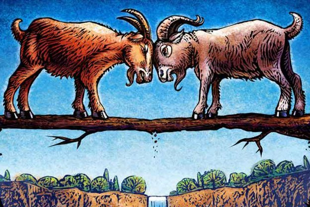
ある日 、2 匹のヤギは川を渡って弱いと狭い橋を渡るしてみてください。ヤギは橋の両端にありますが、どちらも、他のための方法を作る準備ができています。彼らは橋の中央に来て、最初の交差すべきかについての戦いを開始します。彼らは無思慮に戦うと、ブリッジはそれで川にダウンヤギの両方を取って、中にいます。
教訓：それは頑固を通じて不幸に来るより得た方が良いです。
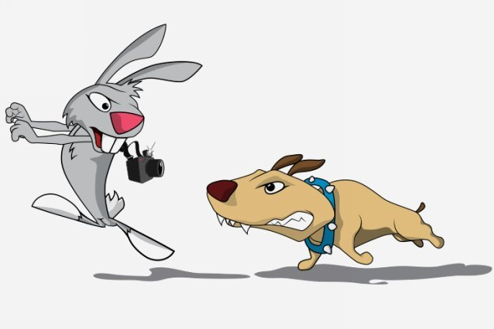
これは、彼らのやる気を引き出すための貴重な道徳的な教訓をもたらします子供のためのもう一つの興味深い動物の物語です。今それをお楽しみください！ある日、強力かつ強力な猟犬はウサギを追いかけていました。長い時間のために実行した後は、疲れた猟犬は狩りを断念します。これを見ヤギの群れは小さな一の獣よりも優れていると言って、猟犬を皮肉っ。このために、猟犬の応答：「ウサギが寿命のために走っていた、私は夕食のために走っていました。それは私たちの間の差です。」
教訓：インセンティブ拍車アクション
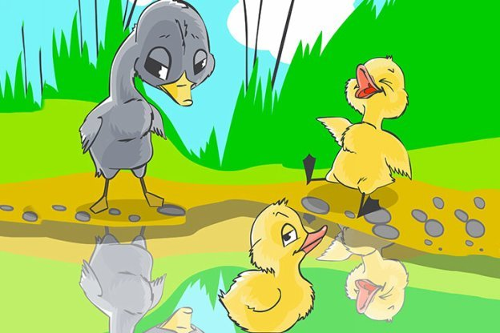
農家は 、 1 0 個の卵を築いた鴨を、持っていました。すぐに、彼らはすべて孵化し 。 1 0 のうち 、9 子ガモは、お母さんのように見えました 。 1/1 0 には、大きなグレーと醜いでした。他のすべての子ガモは醜 い1 の楽しさを作りました。ファーム内の不幸、貧しいアヒルの子は、近くの川へ逃げました。そこに彼は白、美しい白鳥を見ています。怖いと失われた、彼は川で溺れてみたかったです。彼は川で彼の反射を見たときにでも、彼は醜いアヒルの子が、美しい白鳥ないことに気づきました！
教訓：あなたがいるだけの方法美しいです。
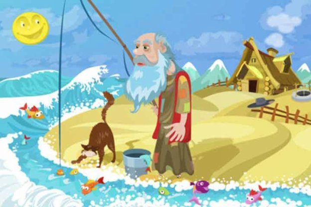
その生計彼の漁獲量に依存していた漁師がかつてありました。ある日、彼は唯一の小魚をキャッチすることができました。魚は、生きるためにその絶望で、親切先生、私を残してください」と言います。私は小さく、あなたには役に立たないのです。川に私をバックしようと私が大きく成長することができます。あなたはその後、私をキャッチし、より多くのお金を稼ぐことができます。」賢い漁師の回答、 『私はまだ存在していな い1 のために一定の利益を与えることはありません。』
教訓：不確実な利益のために一定のゲインを見送るしないでください。
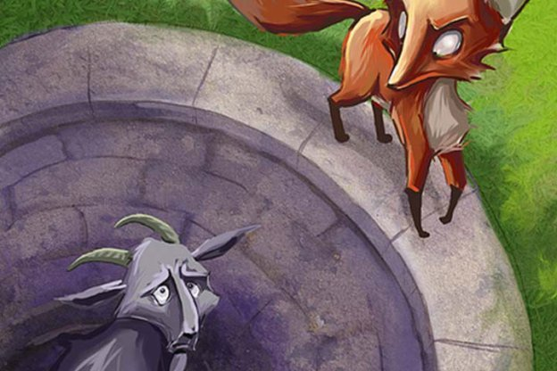
森の中で一人で歩いて、不運なキツネはよく一日に落ちます。抜け出すことができず、彼は助けを待ちます。合格ヤギはキツネを見て、彼はよくでている理由を彼に尋ねます。狡猾な狐「が大きな干ばつになるだろう、と私は私が水を持っていることを確認するためにここにいるさ。」、応答だまされやすいヤギはこれを信じているし、ウェルにジャンプします。キツネは迅速にヤギにジャンプし、十分にヤギを残し、トップに到達するために、その角を使用しています。
教訓：困難に男のアドバイスを信頼しないでください。
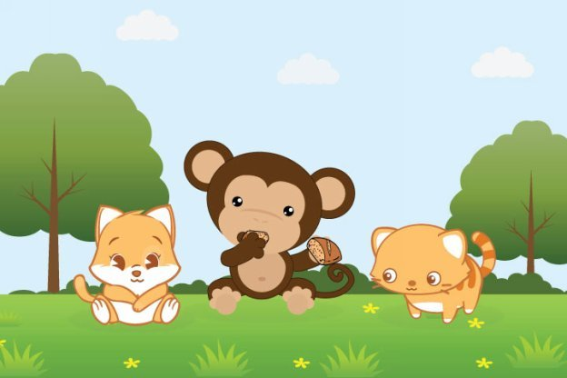
祝宴の後 、2 匹の猫はケー キ を見て、それのために戦って開始します。猿は、利得のための機会としてこれを見て、彼らを助けるために提供しています。猿は二つの部分にケーキを分けるが、それらは等しくないと言ってその頭を振ります。彼は一枚の一口を取り、その後、他の、まだそれらが等しく見つけます。失望かわいそうな猫を残して、左のこれ以上のケーキがあるまで、彼はそう続けています。
教訓：あなたはそれから自分自身、他の誰かの利益の間でけんかをするとき。
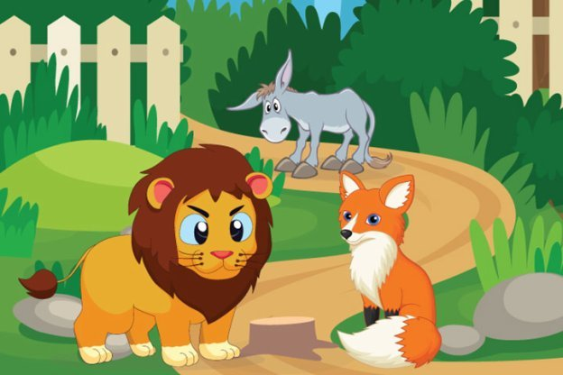
これは、動物のキャラクターを持つ短編小説の別のコレクションです。ある日、お尻はハンターが乾燥するために左にライオンの皮膚時に偶然。彼は動物や人々に向かう途中で恐怖を与えて、それを入れて、ジャングル向かって歩きました。お尻は、その日自身の非常に誇りに思っていたと喜びで大 声 braye d 。すぐに、誰もがそれはライオンの皮でお尻だったことを知っていました。彼らはそれを恐ろしい彼らのために良い打撃を与えました。キツネは、負傷したロバまで歩くと言う：「私はそれはあなたの声であなたを知っていました」
教訓：ファイン服は偽装かもしれないが、愚かな言葉が馬鹿を開示しています。
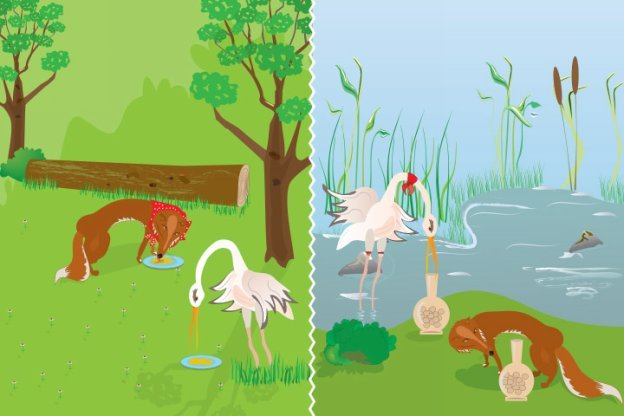
コウノトリと非常に友好的だったキツネは、かつてありました。これは 、1 日の夕食にコウノトリを招待していたずらをすることを決めました。そこで彼はそれに少しスープで、浅い皿の持つテーブルを設定します。コウノトリはその長いくちばしとスープを飲んでタフな時間を過ごしながら、キツネは、良い食事をしました。コウノトリは、優しさを返すことを決めたとディナーにキツネを超える招待し、長い首、狭い口の瓶でスープを務めました。この時間は、コウノトリはよく食べた、とキツネが飢え。
教訓：一つ悪いターンは、別のに値します。
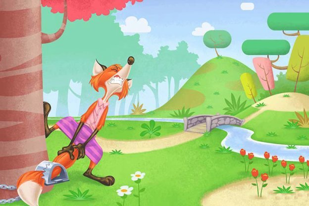
ある日、キツネはハンターの罠に巻き込ま尾を持っています。それはパニック、できるだけハード引っ張って自分自身を解放しようとします。試みで、それは完全にその尾を失います。尾がなければ、それはその仲間のキツネを満たすことが恥ずかしく感じています。他の人が尾を持っていないためにそれを笑うだろうことを恐れて、キツネは、計画を思い付きます。これは、会議のために呼び出し、彼らは無用であり、彼らはまた、それが簡単に敵がそれらをキャッチできるようにするためにする彼らの尾をカットしなければならない他のキツネを伝えます。このために、チーフキツネは、「私はあなたがあなたを失っていなかった場合は、私たちの優雅な尾を取り除くために私たちを求めるだろうとは思わない。」、応答します
教訓：自分のレベルにあなたを下げるしようと彼のアドバイスに耳を傾けないでください。
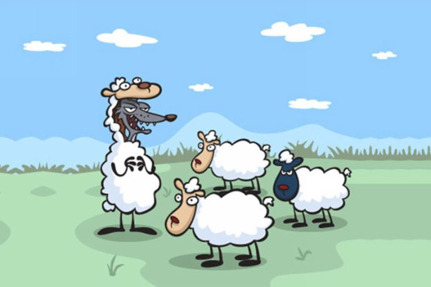
オオカミは、食事のために羊のホールドを取得タフな時間を持ちました。それはシープスキンで自分自身をドレッシングで慎重にそれらを攻撃することを決定します。すぐに、それはコーナーに羊の一つ一つをリード起動し、それらすべてを食べます。
教訓：外観は欺瞞です。
フーリッシュ・ライオン
森の中でライオンが住んでいました。彼は古い成長していたし、もう速く走ることができませんでした。日はそれで行きましたとおり、彼は狩りをするのをますます困難になりました。
ある日、彼は食べ物を探しに森の中をさまよったが、彼は洞窟に出くわしました。彼はで覗き見し、洞窟内の空気をワカサギ。「いくつかの動物がここに滞在しなければならない、」彼は彼自身に言った。彼は唯一それが空を見つけるために洞窟の内部でこっそり。「私の中に隠し、動物が戻るのを待つだろう」と彼は思いました。
洞窟は、ジャッカルの家でした。毎日、ジャッカルは食べ物を探しに出かけ、休息する夜に洞窟に戻ってしまいます。その夜、彼の食事をした後ジャッカルは家に向けて開始しました。彼が近づいてきたようしかし、彼は何か間違ったことを感じました。彼の周りのすべてのものは非常に静か。「何かが間違っている、」ジャッカルは彼自身に言った。「なぜ、すべての鳥や昆虫そう沈黙しています？」
非常にゆっくりと慎重に、彼は彼の洞窟向かって歩きました。彼は危険の兆候を監視、彼の周りに見えました。彼は洞窟の口に近づくにつれ、すべての彼の本能が危険の彼を警告しました。「私はすべてが大丈夫であることを確認する必要があり、」ジャッカルは思った。突然、彼は計画を考えました。
賢いジャッカルは洞窟に出呼ばれます。「こんにちは、私の良い洞窟は、何が今日のあなたに起こりましたか？なぜあなたはとても静かです？」
ジャッカルの声が洞窟の奥深くエコー。今では、もはや彼の空腹を制御できるライオンは、私は洞窟が沈黙していることをここにいるので、それはだと思う」、自分自身に考えました。ジャッカルは、何かが間違っていることを認識する前に、私は何かをする必要があります。」
ジャッカルが出呼び出すために続けて、「あなたは、私たちの契約の洞窟を忘れてしまいましたか？あなたは、私が家に戻ったときに私を迎えることになっている。」ライオンは彼の声が中空音作ってみましたし、洞窟内から呼び出さ、「お帰りは私の友人。」
鳥が大声チャープとライオンの轟音を聞いて飛び去りました。ジャッカルのためとして、彼は恐怖で震撼させました。飢えたライオンが彼に急襲し、彼を食べることができる前に、ジャッカルは早く彼の足は彼を運ぶことができるように彼の愛する人生のために走りました。
ライオンは洞窟を入力するジャッカルのために長い間待っていました。ジャッカルが来るなかったときしかし、ライオンは、彼がだまされていたことに気づきました。彼は彼が獲物を失う作っ彼の愚かさのために自分を呪いました。
クロウとネックレス
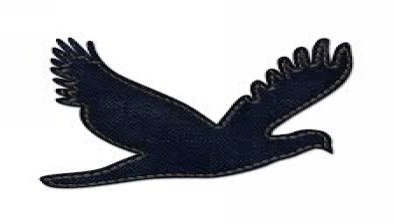
カラスと彼の妻は川のそばに巨大なガジュマルの木の上に巣を建てたら。彼らはそこに非常に満足していました。女性カラスが彼女の卵を置いたときにしかし、彼らは不快なショックのためにありました。ツリーの下部にある穴に住んでいた巨大な蛇が上がってきたすべての美しい卵を食べました。
カラスは、怒りと痛みと無力でした。「あなたは、この邪悪な蛇はもう子供たちを食べさせないことができる」と苦々しく女性カラスを叫んだ。「あなたは彼からそれらを保存する方法を見つける必要があり、」彼女は言いました。
「私たちは私たちの友人ジャッカルに行きましょう。彼は非常に賢いです。彼は確かに溶液で私たちを助けることができるようになります、」男性カラスは言いました。
彼らは両方とも彼らの友人ジャッカルが住んでいた森の中に洞窟に飛びました。
ジャッカルは、彼らが来るのを見ました
。"
こんにちは私の友人。なぜあなたはとても悲しいと心配しますか？私は、どのような方法であなたを助けることはできますか？」と彼は尋ねました。
「私の妻は私たちの巣に卵を産むたびに、ツリーのふもとに住む邪悪な蛇はそれらを食べ、」カラスは説明しました。
「我々は彼を取り除くと、子供たちを保存したいです。私たちは何ができるかを教えてください。」
ジャッカルは、いくつかの時間のためにと思いました。「私はあなたが何をすべきかを知って、」ジャッカルは、言った、彼はカラスに計画を語りました。
川へのお風呂のための彼女のメイドに来て女王の習慣でした。彼らはそうしたとき、彼らはすべて自分の服や宝石を取り出して、川の土手の上にそれらを置きました。次の日にいつものように女王と彼女のメイドは川に入りました。
「あなたは右の何をすべきか知っている？」彼の妻にカラスを尋ねた。「はい、」と彼女は答えました。
それらの両方は、服や宝石の山の上に飛びました。女性カラスは迅速に彼女のくちばしで貴重な真珠のネックレスを拾いました。同時に、男性のカラスは女王と彼女のメイドの注目を得るために大声
で
CA
W
ようになりました。
「ああ、それらのカラスが私の真珠のネックレスをとっている。」女王が叫んだ。「ガード！」彼女は泣いた。「戻ってそれらの厄介なカラスからそのネックレスを取得します。」彼女の警備員が大声で叫んでカラスを追いかけました。
警備員の背後に閉じるとカラスはガジュマルの木にまっすぐ飛んでいきました。すべてのノイズを聞いて、蛇は木のふもとに彼の穴から出てきました。すぐに、女性のカラスは蛇だったネックレスの権利を落としました。
"
外を見る！ネックレスの近くに巨大な蛇があり、
」1
つのガードを警告。
蛇が起こっていたことを実現できる前に、警備員は鋭い槍で彼を攻撃し、彼を殺しました。警備員は、ネックレスを拾い、その女王に戻ってそれを取りました。
カラスは敵を取り除くそれらを助けるためジャッカル彼らの友人に感謝しました。彼らは子供たちと幸せに暮らしました。
クロウとイーグル
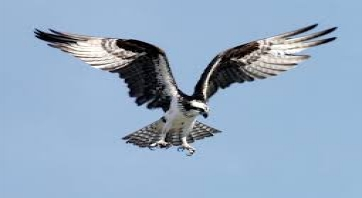
これは、明るい春の日でした。太陽が青空に高かったです。羊の群れは、丘の中腹に満足して放牧ました。その柔らかな白いコートや巻き毛の尾を持つ小さな子羊は、自分たちの中で遊んでいました。シェパードは、彼の群れが安全と幸せだったことを見て、大きな古い木の広がりの枝の下で眠りに落ちていました。
突然、ワシが空からダウン急襲しました。それは子羊に急襲ので、迅速に他の子羊のどれもめそめそするための時間がなかったこと、それをオフに運ば。眠っシェパードは何も聞いていません。
クロウはシェパードが眠って横たわっていた下木の上に座っていました。彼はイーグルが子羊を捕まえ、彼の巣にそれを実行していた方法を見ていました。
「夕食を得るためにどのような素晴らしい方法！」彼は思いました。「なぜカラスは、古い臭い食べ物を求めますか？」
クロウはイーグルを行っていたとおりに正確に行うことを決めました。それは十分に簡単に見えていました。彼がしなければならなかったすべて
は
..
.
簡単に、彼が望んでいたその羊を決め、その上にダウン急襲、彼の爪のようにしっかりと彼ができたとして、それを保持し、それをオフに飛ぶことでした！
イーグルはそれを行うことができれば、そのように彼ができました！
クロウは、彼が望んでいたその羊を決定するために羊の群れを見下ろしました。
ただ、ツリーの下に、シェパードによって、大きな、古いラムは放牧されました。彼はカーリングホーンと厚い重いフリースを持っていました。
「なるほど！彼は私のために良い食事をする必要があります！」クロウは貪欲と思いました。彼はとても空腹だったとランチに大きなジューシーなラムの考えは彼の口の水を作りました。
クロウは、彼はイーグルがそう見ていただけのように、静かにかつ迅速にダウ
ン
RA
M
に急襲し、そのフリースでしっかりと把握しました。
「そして今、私の巣にそれをオフに飛ぶために、」カラスは自分自身に言いました。彼はすべての彼の強さで彼の翼をフラップが、ラムを持ち上げことができませんでした。
ラムが大きかったです。彼はカラスが運ぶことのためにあまりにも重かったです。クロウは成功せず、何度も何度も試してみました。
ラムは、その背中にカラスを感じ、最も悩まされました。ちょうどあなたは、あなたが、あなたの厄介な鳥をやっていることだと思いますか？」彼は彼の肩の上に彼をにらみつけ、スナップ。
クロウは離れラムを実行しようとしている、難しくまだフラップ。
「今すぐやめて！」ラムを叫びました
。'
どこかに行って！シュー！平和で私を残します！」彼はジャンプして喜んだと彼の背中をオフクロウを振ることを試みました。
「ああああ！」クロウは、ラムの熾烈なふざけた態度で警戒、と思いました。「多分これは、すべての後にこのような良いアイデアではありませんでした！おそらく、私はどこか別の場所に私の夕食を探してください！私はより良
い
RA
M
があること聞かせていました！」
カラスが飛んしようとしたが、彼は移動できませんでした。彼の爪は、ラムの厚いフリースに巻き込まれました！クロウは、彼の足この方法とそれを引っ張りました。彼はハード、彼はできる限り彼の翼をフラップ。しかし、関係なく、彼が何をしたか、彼は唯一のより強固にはまり込むように見えません。
ああ、どのように彼はこれまで無料で入手するつもりでしたか？クロウは恐怖と絶望に大
声
squawke
d
。ラムは怒りに次、木の周りを走り始めました。シェパードは、スタートで目が覚めました。誰がその恐ろしい音を作っていましたか？彼の羊は危険にさらされていましたか？彼は起き上がっ。
どのような光景が目に会いました！ラムは、ラウンドと木の周りを走っていました。背中
に
squawkin
g
と空気中に上昇しようとしている、カラスでした。
シェパードは笑うようになりました。最後に、彼の目を拭く、シェパードは立ち上がりました。彼がすることによって実行し、優しい言葉で彼を静めように、彼はラムを停止しました。
ラムがまだあったとき、羊飼いは彼の袋から鋏のペアを取りました。カラスがフリーになるまで片手でカラスを持ち、彼は巧みフリースを切り取ら。
「あなたは何をしていたかを考えていた、私の罰金の友人は」」カラスを見て、シェパードを尋ねました。「イーグルことで遊ぶ、あなたがましたの？」
シェパードは再び爆笑しました。
クロウ
は
croa
k
ししても、あまりにも恥ずかしかったです。彼は、羊飼いは彼が彼が彼の巣に飛んで、彼の愚かな頭を隠すことができそう手放すということだけを望みました。
シェパードはカラスを手放すとき最後に、カラスは彼の翼をフラップと早く彼ができたとしてオフに飛びました。
「そして、あなたはイーグルになりたい次回は、あなたが動物にあなたのサイズを選ぶことを確認してください！」彼の後シェパードと呼ばれます。
クロウは、愚かな愚かな感じ、他のカラスがやったように、今から彼はやるだろうと自分自身を約束しました！
クレーンと蛇
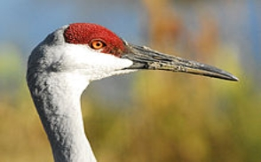
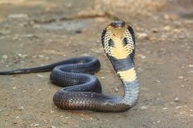
川の土手に森の近くでは単なるは、彼の妻とのクレーンが住んでいました。彼らは非常に不幸でした。妻は自分の巣に卵を敷設するたびに、ツリー内の中空に住んでいた大きな黒いコブラは、それらを食べます。クレーンは友人カニを持っていました。彼は友人にカニを行って、彼の悲惨さを共有しました。「私は絶望的な感
じ
... .Tha
t
こっそり泥棒が再び私たちの卵を食べた、」クレーンは怒って訴えました。
「心配しないで、」カニ
は
comfortingl
y
言った。「あなたは私のような友人を持っている場合。我々は解決策を考え出すだろう絶望的である必要はありません。」
カニは計画を考えるように座っていました。突然、彼は飛び上がっ、クレーンに殺到しました。
「友達は、私は素晴らしい計画を持っている、」カニは言った、クレーンの車に何かをささやきました。
クレーンが戻って自分の巣に飛んだし、すべてのカニの計画についての彼の妻に話しました。彼はとても興奮していました。
「あなたは必ず、これは動作しますか？」妻を尋ねました。
「私たちは間違いを犯していない願っています。計画を進めて行く前に二度考えてみてください。」
しかしクレーンは計画を試して熱望していました。クレーンが川の土手まで飛び、魚を始めました。彼はいくつかの小さな魚を捕まえて、マングースが住んでいた穴に下って行きました。彼は穴の口の中で魚を落としました。それから彼は別の魚を取り、さらに少し離れて最初
の1
からそれを落としました。これを繰り返し、彼は彼の巣だった木につながる魚の道を作りました。
マングースは、魚をワカサギ穴から出てきました。「ああ、魚が！」嬉しそうマングースを叫んだし、すぐにそれを食べた。彼はその後、魚の跡を追った。彼はクレーンや蛇が住んでいた木に近づいたとして、歩道が終了しました。検索これ以上の魚、彼は周りを見回しました。
突然、彼は木のふもとに黒コブラに出くわしました。マングースを見て、コブラは彼の人生のために戦いました。どちらも、長い時間のために戦ったと最終的にマングースがヘビを殺しました。彼らの巣からの戦いを見ていたクレーンは安堵とため息をつきました。
翌日マングースは、より多くの食べ物を見つけることを期待して同じ道をたどるようになりました。彼は歩道が終了した木に来たとき、彼は食べ物を求めて木に登ることにしました。
離れた川の土手にあったクレーンは、マングースは木を降り見つけるために戻りました。巣に見て、彼らは、この時間は、マングースがすべての卵を食べていたことを発見しました。
「ああ！我々は唯一の別のものを見つけるために
、1
体の敵を処分した、」妻にクレーンが言いました。
賢いカエル
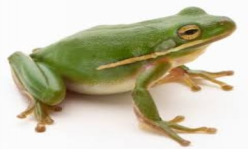
森の奥深く、池がありました。多くの魚、カニやカエルは池に住んでいました。かれらは幸せと平和な生活でした。
その中で
も
Sahasrabuddh
iと
Shatabuddh
i
という名前
の2
匹の美しい魚が住んでいました。彼らは池の中の他の魚よりも大きかったです。彼らは美貌と知性を非常に誇りに思っていました。
同じ池で彼の妻とカエルが住んでいました。彼の名前
は
Ekkabuddh
i
ました。魚やカエルは良い友達でした。彼らはすべての邪魔されずに人生を導きました。
しかし
、1日2
人の漁師が、釣りの後に森の川から戻ります。池に出くわしました。これは、夕方には遅かったといつものように、すべての魚やカエルが遊んでいました
。
Sahasrabuddh
i、
Shatabuddh
i、
Ekkabuddh
i
および他の多くは、ゲームに参加しました。彼らは、空気中に高跳び、お互いを追いかけました。
美しいシーンを見て漁師は驚かされ、そのトラックで停止しました。
「彼らは見てどのように美しい？
」1
人の漁師は語りました。
"
はい。そして、彼らの多くは、あまりにも、」他を答えました。
「池は非常に深い見ていない、」最初の漁師は言った。「私たちはそれらのいくつかをキャッチしてみましょう。」
「これは、すでに非常に遅れていると我々は長い道のりを運ぶために大きな負荷を持っています。明日戻ってくるのをみましょう、」他の漁師が示唆されました。
Ekkabuddh
i
は池に他の人になって、あなたは漁師が言ったことを聞いていない」と述べましたか？私たちは、安全な場所のため、この池を残しておく必要があります。」
2
人の漁師は、彼らが私たちに明日をキャッチするために戻ってくると述べたからといって、」あなたは、私たちは私たちの家を出て、逃げるにしたいです。私たちが知っているすべてのために、彼らは戻ってこないかもしれない、
」
Sahasrabuddh
i
は語りました。
「彼らは私たちをキャッチするために戻ってきたとしても、私は逃げるために千回のトリックを知っています。」
「あなたの千個の方法が失敗した場合でも、私は脱出するために別の百の方法を知って、
」
Shatabuddh
i
は言った。「私たち
は2
人の漁師は、私たちの私から離れて私たちを怖がらせません。」池のすべての他の人は彼らと合意しました。
「まあ！私は一つだけのトリックを知って、
」
Ekkabuddh
i
は言った。「危険ストライキの前に場所を残すために。
」
Ekkabuddh
i
と彼の妻は、より安全な場所を求めて池を残しました。彼らは左のように、すべての魚、カニやカエルが彼らに笑いました。
翌日漁師が池に戻り、自分のネットをキャスト。「痛いです！私が通過噛まないようにするために、このネットが厚すぎる、
」
Sahasrabuddh
i
を叫びました。
「私にとっては、あまりにも、
」
Shatabuddh
i
は叫んだ。「私は得ることができる場合にのみ、私は何かを行うことができます。
「私たち
は
Ekkabuddh
i
に耳を傾けているはず、」魚を叫んだ。「今、私たちはすべての運命にあります。」
漁師はそれらすべてをキャッチし、大きなバスケットにすべての魚、カエルやカニを入れて、それらを奪いました。
Ekkabuddh
i
は、彼の妻と岩の後ろに隠れて彼女になったと、言った「私は時間内に行動していなかった場合、我々はまた、他の人とそのバスケットにあるであろう。」
賢いカニ
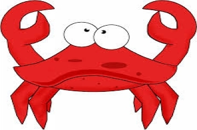
大きな湖でサギが住んでいました。彼は魚をキャッチし、それらを食べるために使用されます。しかし、彼は古くなっていたし、前のような魚を捕まえることができませんでした。彼は一緒に何日も食べずに行ってきました。
「私は計画を考える必要があります。そうでなければ私は」長い間生きられないだろうサギは思った。すぐに彼は巧妙な計画で出てきた。サギが落ち込んで思慮深い探して水の端で座っていた。同湖ではフレンドリーで思いやりだったカニが住んでいました。彼のよう行った過去の鷺が見えたか、彼が気づいたと、彼に尋ねた、「あなたは私の友人を押し下げ探しているのはなぜ？」
「私は何を言うことができ、」サギは悲しい声で言った。「何か恐ろしいことが起こるだろうされています。」
「それは何ですか？」心配そうにカニを尋ねました。
私は私の方法で、ここで今朝だったとき」、私は占星術師は、次
の
1
2
年間、これらの部品には雨がないことを言うのを聞きました。湖が干上がるだろうと我々はすべて死んでしまいます。私はかなり古いです。私が死ぬかどうかは関係ありません。しかし、あなたのすべてはとても若いです。あなたが見て楽しむためにそんなにあり、」サギは語りました。
カニは、湖で魚に行き、サギが彼に伝えていたものを彼らに言いました。彼らはすべての恐怖でいっぱいでした。「いい
えO
！私たちは何をしますか？我々は、すべて死んでしまう。」彼らは叫びました。
「非常に大きな湖はここからある程度の距離があります。私はそこに一つ一つをあなたのすべてを取ることができます。」サギを提供しました。すべての魚を慰め、彼らはいずれかによって大きな
湖1
に運ばれることに合意しました。
毎日、サギが魚を一つずつ飛んでいくのです。彼は彼の長いくちばしの間恐る恐
る1
を保持し、離れて飛んでいくのです。しかし、その代わりに任意の湖にそれらを取って、彼は少し離れた岩の上に着地し、それらを食べるでしょう。それから彼は夕方まで休むと湖に戻ってきます。
数日後、カニはサギまで行ってきました。「あなたは他の湖に魚を取っています。ときあなたは私を取るだろう？」と彼は尋ねました。
サギは、私は魚を食べることの疲れている」、自分自身に考えました。カニ肉は楽しい変更する必要があります。」
サギは、他の湖にカニを取ることに合意しました。
しかし、カニは彼のくちばしに運ぶためにサギのためにあまりにも大きかったです。だから、カニは、サギの背中へと登り、彼らが旅を始めました。しばらくして、カニはせっかちな成長しました。
「湖でどこまで？」と彼はサギを尋ねました。
「あなたがだます、」サギは笑った。「私は湖にあなたを取っていない。私はそれらの岩から身をダッシ
ュ
し、あなたは私がすべてのそれらの魚を食べたいと食べるつもりです。」
「私はあなたが私を殺すことができるように馬鹿ではないよ、」カニは語りました。
彼は強力な爪でサギの首を開催し、死に邪悪なサギを絞め。
餓狼
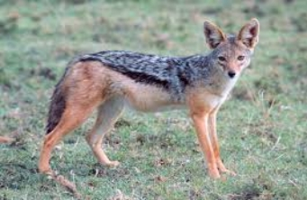
一度、オオカミはとても空腹でした。それはここにある食べ物を探しました。しかし、それはいずれかを得ることができませんでした。最後に、それは木の穴に、パンや肉の一片のパンを見つけました。
|
4人の友人
かつて小さな村で時間
に
Satyanan
d、
Vidhyanan
d、
Dharmanan
dと
Sivanan
d
という名前
の4
人のバラモンが住んでいました。彼らは良い友達になるために一緒に育ちました
。
Satyanan
d、
Vidhyanan
dと
Dharmanan
d
は非常に知識が豊富でした。しか
し
Sivanan
d
は、食べて、寝て自分の時間の大半を費やしました。彼は誰もが愚かであると考えられました。
飢饉たら村を襲いました。すべての作物が失敗しました。川や湖が枯渇し始めました。村の人々は、彼らの命を救うために他の村に移動し始めました。
「我々はまた、我々はまた、他の多くのように死んでしまうそうでないすぐに別の場所に移動する必要があるか、
」
Satyanan
d
は言った。彼らはすべて彼と一緒に同意しました。
「しかし、
何
Sivanan
d
は？
」
Satyanan
d
は尋ねました。
「私たちは私たちで彼を必要ですか？彼は何のスキルや学習を持っていません。私達は私達に彼を取ることができない、
」
Dharmanan
d
は答えた。「彼は私たちの負担になります。」
「どのように我々は彼を残すことができますか？彼は私たちで育った、
」
Vidhyanan
d
は言った。「我々は、これまで私たちは私たち
の4
均等に稼ぐものを共有することになります。」
彼らはすべて彼らと一緒
に
Sivanan
d
を取ることに合意しました。
彼らはすべての必要なものを詰め、近くの町のために設定します。途中で、彼らは森を横断しなければなりませんでした。
彼らは森の中を歩いていたとして、彼らは動物の骨に出くわしました。彼らは好奇心旺盛になり、骨を詳しく見てみために停止しました。
「これらは、ライオンの骨あり、
」
Vidhyanan
d
は語りました。
他の人が同意しました。
「これは私たちの学習をテストする絶好の機会である、
」
Satyanan
d
は語りました。
「私は。一緒に骨を置くことができる」そう言って、彼はライオンの骨格を形成するために一緒に骨をもたらしました。
私はそれに筋肉や組織を置くことができる
「
Dharmanan
d
は、言った、」。」間もなく死んでライオンが彼らの前に横たわっていました。
「私は体に命を吹き込むことができます。
」
Vidhyanan
d
は語りました。
彼は続けることができる前に、しかし
、
Sivanan
d
は彼を停止するために飛び上がっ。「いいえ。しないでください！あなたがそのライオンに命をかけた場合、それは私たちのすべてを殺すだろう」と彼は叫びました。
「ああ、あなたは臆病者！あなたは自分のスキルや学習のテストから私を止めることはできない、」怒
っ
Vidhyanan
d
を叫んだ。「私はあなたが一緒に来るようにする他の人を要求したという理由だけで、あなたが私たちと一緒にここにいます。」
「そして、私が最初にその木に登るせてください、」おび
え
Sivanan
d
は、最寄りの木に向けて実行していると述べました
。
Sivanan
d
がツリーの最も高い枝に身を引っ張ら同じよ
う
Vidhyanan
d
はライオンに命をもたらしました。耳をつんざく轟音とともに起床、ライオンが攻撃され、殺され
た3
人はバラモンを学びました。
|
|
|
象とフレンズ
ある日、象は友人を求めて森の中に迷い込ん。
彼は木の上に猿を見ました。
「あなたは私の友人になりますか？」象を尋ねました。
猿は答えた、「あなたはあまりにも大きいです。あなたは私のような木からスイングすることはできません。」
次に、象はウサギに会いました。彼は彼の友人であることを彼に尋ねました。
しかし、ウサギは、「あなたは私の穴で遊ぶには余りにも大きいです！」と言いました
その後、象はカエルに会いました。
"
私と友達になって頂けませんか？彼は尋ねた。
「どうすればよいか？」カエルを尋ねました。
「あなたは私のような程度飛躍するにはあまりにも大きいです。」
象は怒っていました。彼は次のキツネに会いました。
「あなたは私の友人でしょうか？」と彼はキツネを尋ねました。
キツネは、「申し訳ありませんが、先生、あなたが大きすぎる。」と述べました
翌日、象は自分たちの生活のために実行されているフォレスト内のすべての動物を見ました。
象は、問題が何であったか、それらを尋ねました。
クマは森の中の階層がある」と答えました。彼は私たちすべてを飲み込んしようとしています！」
動物はすべて非表示にする逃げました。
ゾウは、彼が森の中で皆を解決するために何ができるか疑問に思いました。
一方、虎は、彼が見つけることができる誰でも食べ続けました。
象は虎まで歩いて、言った「、ミスタータイガーは、これらの貧しい人々の動物を食べないでください。」
「あなた自身のビジネスを気に！」虎はうなりました。
象は虎に多額のキックを与えざるを得ません。
おびえた虎は、彼の人生のために走りました。
象は皆に良いニュースを発表するために戻って森の中
に
amble
d
。
すべての動物はゾウに感謝しました。
彼らは、「あなたは私たちの友人になるちょうどいいサイズです。」と述べました
|
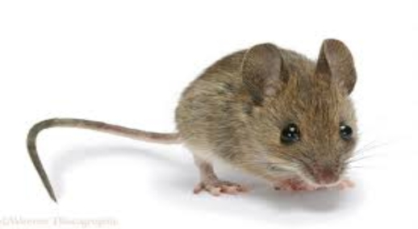 |
|
田舎のネズミと町のネズミ友人でした。国マウ
ス1
日が来るとフィールドの自宅で彼を見るために彼の友人を招待しました。タウンマウスが来て、彼らははっきりと素朴な風味を持っていた後者
は
barleycorn
s
と根の夕食に座りました。
味は、ゲストの味にあまりなかったし、現在、彼は私の貧しい親愛なる友人は、あなたがここにアリよりも良い生きていない」との勃発しました。さて、あなたはちょうど私が運賃どのように表示されるはずです！私の食料貯蔵室にはたくさんの定期的なホーンです。あなたが来て、私と一緒に滞在し、私はあなたが土地の脂肪に生きる約束しなければなりません。」
彼は町に戻ったとき、彼は彼と一緒に田舎のマウスを取り、小麦粉とオートミールやイチジク、蜂蜜や日付を含む食料貯蔵室に彼を示しました。
国のマウスはそれのようなものを見ていないし、彼の友人が提供する贅沢を楽しむために座っんでした。彼らはよく始めていた前しかし、食料貯蔵室の扉が開き、いくつかのいずれかが入って来た
。2
匹のマウスがオ
フ
scampere
d
と狭いと非常に不快な穴に身を隠しました。すべてが静かだったときに現在、彼らが再び出てあえて。しかし、他のいくつかのいずれかが入ってきて、オフ彼らは再び自沈しました。これは、訪問者のためのあまりでした。「さようなら」と、彼は「私はオフだ。あなたは贅沢に住んで、私は見ることができますが、自宅で、私は根と平和におけるトウモロコシの私の簡単な夕食を楽しむことができるのに対し、あなたが危険に囲まれています。」と述べました
|
|
|
むかしむかし森の中でライオンが住んでいました。重い食事の後のある日。これは、ツリーの下に眠っていました。しばらくして、そこにマウスが来て、それがライオンにプレイし始めました。突然ライオンは怒りで立ち上がって、その素敵な睡眠を邪魔する人を探しました。そして、それは恐怖に震え小さなマウスの地位を見ました。ライオンはそれに飛びついたし、それを殺すために始めました。マウスはそれを許してライオンを要求しました。ライオンは同情を感じ、それを残しました。マウスが逃げました。
別の日には、ライオンはハンターで、ネットでキャッチされました。マウスが来て、ネットを切りました。したがって、それが脱出しました。そこの後に、マウスとライオンは友達になりました。彼らはその後森の中で幸せに暮らしました。
ドンキーソルトのロード
一度、行商人が住んでいました。行商人は、子供のための暖かく、甘い、スティッキータフィーが戻って学校から彼らの方法でムシャムシャ食べるために女性を保つために、自分の恋人のための農民とかなり装身具のために暖かい、羊毛ショールを商品のすべての種
類
... .sturd
y
靴を販売しました。
ある日、彼は果物を販売し、他の日に、やかん。すべての彼の品物を運ぶために、行商人はロバを持っていました。毎朝、行商人は、彼の品物とロバをロードしました。二人はアウト設定し、村から村へと市場から市場に、農家への農家から歩いでしょう。
行商人は常に彼が行ったよう陽気に口笛、先に歩きました。貧しいロバは、彼のマスターに追いつくためにハード彼ができたとしてしようと彼の荷物の重量の下でうめき、続きます。
毎晩、自社製品は行商、販売と彼のロバは家に帰る道
を
WEN
D
でしょう。その日の水揚げに満足して行商人は、彼のポケットの中の小銭をジャラジャラ、先に歩きます。貧しい古いロバは、足の痛みと一日中重い袋を運ぶから疲れをたどります。
"
ああ！私の貧しい人々の足！うーん！私は背中の痛み、彼が彼の安定に干し草に疲れて倒れて！」ロバは毎晩うめきました。
ロバと安定を共有し、古い灰色の猫は、彼女の頭を振るとため息をつくでしょう。「低い古いロバは、」彼女は彼女自身に言い、そして夜にオ
フ
SLIN
K
でしょう。
ある朝、行商人は、ダースの袋を持つ貧しいロバをロードしました。袋は、塩の完全かつロバの通常の負荷よりもはるかに重かったです。ロバは、重量の下でうめいたが、彼は常に行っていたとして、辛抱強くそれを産みました。
「私は、この塩に今日きちんと利益をしなければなりません。」彼らはオフに設定され、ロバへの行商人を言いました。「彼女の料理に塩を購入する必要はありません。また、彼らはこのためによく私を支払うことになる女性は
あ
りません。私は今
夜
金持ちでなければなりません！」
そして、行商人は、道路の真ん中に小さなジグを踊りました。ロバは彼の背中に大きな負荷と、今後の長い一日を考えることができます。
ロバは、行商人の後ろに沿っ
て
plodde
d
。太陽が空になりまし高かったです。ロバは熱く、疲れや水の飲み物の憧れでした。アップ先に、彼は知っていた、涼しい、甘い水の流れが流れました。ロバができるようになる流れの速さで彼の疲れた足と背中に大きな負荷に向けて急いと飲みにオーバー突きました。ストリームのエッジは泥やスラッシュで滑りやすかったです。ロバは、彼の背中に塩の重い袋で、滑って水の中に落ちました。
「うーん、助けて！助けて
！'
テロでロバ、水に狂ったように暴れる足
を
braye
d
。「私は確かに私の背中にこの恐ろしい負荷で溺れます！」
しかし、突然、ロバは魔法であるかのように行って、彼の背中に浮き、負荷自分自身を感じました。彼は銀行に上によじ登っと自分自身を横に振りました。はい！彼の背中に重量が消えていました！
塩を水に溶解していたためにもちろん袋は、軽量化しました。しかし、ロバはそれを知りませんでした
。'
やっと！私の負担の自分自身を取り除くための方法は、」彼は思ったし、彼の偉大な発見の喜び
で
braye
d
。
その夜、彼は彼の負荷はそんなに軽くなっていた、すべての彼は滑って倒れストリームに、どのように、彼が出て登ったときたかについて、グレーの猫を語りました。
「私にとってこれ以上重い負荷は、」非常に満足して感じて、ロバを宣言していません。
「それは私のためにあまりにも多くを取得するたびに、私がしなければならないすべては、ストリームに落下するふりをして、私の負荷が魔法で軽減されますです！」
灰色の猫は彼女の頭を横に振ったとため息をつきました。「低い古いロバ」。彼女は言った、夜にオ
フ
slun
k
。
次の朝、行商人は、彼は次の村で販売することを望んでいた布の俵で、再びこの時間は猿をロードしました。彼らはオフに設定され、今日に注意してください、古いロバ」と彼は語りました。「私は昨日ペニーを獲得することはできませんでした。私は今日、二重稼ぐ必要がありますか、私たちはベッド空腹今夜に行きます「。
ロバは、行商人の後ろに沿っ
て
plodde
d
と布の重量の下でうめきました。彼の背中には、これまで以上に、彼の足は彼を殺した痛みました。彼は早く彼ができたとしてストリームを見つけて解決しました。運にそれがあるので、行商人は、彼が前日撮影していた同じパスを取って、非常にすぐに彼らは同じストリームに来ました。ロバは非常にのどが渇いとスリップするふりかのように先に急いで、中に落ちた。彼は彼の背中にバンドルが正常に浸したことを確認すること、についての彼の足を蹴りました。
現時点では私の負担が消える。」彼は自分自身を語ったし、いくつかのより多くについて蹴りました。
しかし、何が起こったのか？何かが間違っていました！彼の負荷は、軽くなってきての代わりに、はるかに重いとなっていましたし、ゆっくりと流れに深く彼を引っ張りました。水が布の俵に浸していたためもちろん彼の負担が重くなりました。貧しいロバは、水中では約大敗と恐怖
に
braye
d
。
"
助けて！助けて
！'
彼は泣いた。
一方、行商人は、ストリームに急行し、銀行に自分自身をブレース、水の外におびえロバを助けました。
その夜、ロバは悲しいと落ち着いた生き物でした。彼は家に再びすべての方法を、はるかに重いを運ぶために持っていた浸した布の俵を垂れていました。彼の背中は本当に痛みだったと悪化していたものを、彼は風邪をひいていました。彼は藁に無残くしゃみ。古い灰色の猫が彼を見て、ため息をつきました。「低い古いロバ」と彼は言った、夜にオ
フ
slun
k
。
商人と愚かバーバー
小さな町ではマニバドラという名前の商人が住んでいました。彼と彼の妻は非常に寛大で、親切でした。町の誰もがそれを知っていたし、彼らの家を訪問し、彼らのおもてなしを楽しみました。
ある日。マニバドラは海で嵐にすべての彼の船を失いました。彼らは貴重な貨物を負荷しました。取引のために彼にお金を貸していたすべての人々はすぐに返済を要求しました。マニバドラは彼のすべての持ち物を販売し、それらを支払わなければなりませんでした。最後に彼は何も残っていました。
彼の富に加えて、すべての彼の友人たちも彼を残しました。マニバドラは非常に落胆しました。「でも、私の友人は私を見捨ててきました。彼らはちょうど私の富を気に入って、」彼は苦々しく思いました。
「私は痛みと苦しみを除き、私の妻と子供を与えることは何もありません。多分私の人生を終了することをお勧めします。私は彼らが苦しむ見て負担することはできません。」など乱れた思考で、マニバドラは眠りに行ってきました。
その夜、彼は奇妙な夢を見ました。僧侶が彼の夢に登場して、言った「あなたが棒で私の頭の上に私をタッチすると、私は多くの寿命を長持ちするのに十分な金に変更されます。」夢の中でマニバドラは、自身がスティックに変わる僧侶と僧侶に触れて見ました金貨の巨大な山。
翌朝マニバドラはドアをノック誰かの音に目が覚めました。「私の夢は本当だろうか。私は二度と金持ちになるのだろうか？」マニバドラは、自分自身に考えました。
「床屋はあなたのためにここで、」ドアから彼の妻を呼びました。
「どのように私の愚かな夢を信じるように。彼は彼の髭剃りのために座って、それが叶うことはありません、」マニバドラは自分自身に言った。ちょうどその時、ドアをノックがありました。
マニバドラは立ち上がって、ドアを開けました。驚いたことに、静かにそして有意義に彼を見ている僧侶がそこに立っていました。
マニバドラは棒を拾ってボーッと、それを彼の頭の上に僧侶に触れました。そして、そこに彼の前には、金貨の巨大な山でした。マニバドラは大喜びでした。彼は自分自身に物事を保つために彼を専門家の意見、金貨の寛大な措置を廃止床屋を送りました。
床屋は貪欲な男でした。彼はまた、非常に愚かでした。あなたは頭の上にこれらの僧侶を打ったとき「だから、彼らは金に変更します。今、私は金持ちになる方法を知っています。私はシェービングの疲れや人の髪をカットし、ルピーまた
は2
を獲得し、彼は思いました。」
彼は修道院に行って、僧侶が彼の家に入ると、床屋はスティックを取り、彼らの頭の上に彼らを倒すために始めたとすぐにごちそうのために彼の家にいくつかの僧侶を招きました。貧しい修道士たちは恐怖でした。そのうちの一つは、理髪師の家から脱出するために管理し、助けを兵士と呼ばれます。兵士たちは、理髪師を逮捕し、裁判官に連れて行きました。
「なぜ、あなたは棒で僧侶を破ったのか？」裁判官が尋ねた。「マニバドラは、彼の頭の上に僧侶を打ったとき、彼は金のヒープになって、」理髪師は答えました。
裁判官はマニバドラと呼ばれ、それが本当だった場合は彼に尋ねました。マニバドラは詳細に裁判官に一部始終を説明しました。話を聞いて、裁判官は理髪師は貪欲と不正行為に起因して行動し、愚かな床屋を処罰していたことに気づきました。
レイジードリーマー
一度、小さな村で、貧しいバラモンはそこに住んでいました。彼は非常に学んだが、一日何もしなかったました。彼は、村人たちは毎日彼に与えたの施しに住んでいました。
ある日、いつものように、バラモンは、午前中に起きて、彼の朝の儀式を行い、施しを請うために着手しました。彼はドアからドアへ行ったとして、人々は彼にいくつかのことを与えました。いくつかは
、
DA
L
を与えました。他の人が彼にご飯を与え、まだ他の人は彼に野菜を与えました。しかし、一つ寛大な女性はバラモンに小麦粉の大規模な措置を与えました。
"
ああ！何が良い運。私は、「自分自身へのバラモンを考えて、長い時間のために施しを請う必要はありません。
彼は家に行き、彼の昼食を調理しました。彼が食べた後、バラモンは、大規模な泥の鍋に小麦粉を入れて、彼のベッドの近くにそれを切りました。「さて、それはラットから安全だろう」と彼は彼が午後の昼寝のための彼のベビーベッドで寝て、自分自身に言いました。
彼は飢饉があるまで、私はこの小麦粉を保存します」、と考えるようになりました。そして、私は非常に良い価格でそれを販売します。そのことを、私はヤギのペアを購入します。非常にすぐに、私はヤギの大きな群れを持っています。彼らのミルクで、私はより多くのお金を行います。それから私は、牛と牛を購入します。非常にすぐに私はまた、牛の大群を持っています。彼らの牛乳は私にたくさんのお金を取得します。私は非常に裕福になります。私はその後、我々は少しの息子を持っているだろ
う
..
.
、自分のために巨大な宮殿を建設し、美しい女性に結婚します。私は誇りに思って父親になります。数ヶ月で私の息子は、クロールを開始します。彼はいたずらとなり、私は彼はいくつかの害に来ることを非常に心配になります
。1
は彼の世話をする妻を呼び出します。しかし、彼女は家の仕事で忙しいだろうし、私の呼び出しを無視します。私はそう怒るだろう。私は彼女にこのような教訓を教えるために彼女を蹴るだろ
う
..
.
」
バラモンは彼の足を上に投げました。彼の足は、オーバーヘッドぶら下がっ小麦粉のポットをヒットし、それがすべての汚れ、床の上に小麦粉をこぼし、響きクラッシュで降りてきました。怠惰なバラモンは彼の愚かさと虚栄心が彼に小麦粉の貴重な措置を要していたことに気づきました。怠惰と愚かさは彼にレッスンを教えました。その後、彼は高みにかかったアクティブな生活を送っていました。
ライオンとウサギ
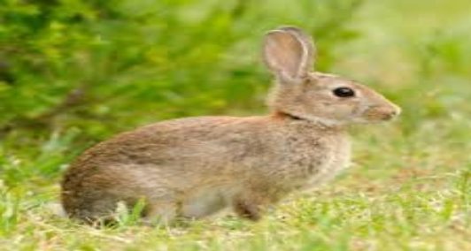
一度森の中で彼の強さを非常に誇りに思っていたライオンが住んでいました。彼はちょうど楽しみのために彼の方法に来た任意の動物を殺します。フォレスト内のすべての動物は、彼らの生存を心配しました。
「ライオンはこれを続けば、私たちのどれもが森の中に残さないであろう、」クマが言いました。
「彼は本当にする必要があるよりもはるかに多くを殺す、」小さなウサギ
を
squeake
d
。
「私たちはこの大虐殺を止めるために何かを思い付くする必要があり、」猿は言った。彼らはすべてが一緒に参加し、ライオンを満たすために行ってきましたので。
「森の王は、私たちは小さな要求を行うようになった、」彼らはすべてのライオンに言いました。
「今では、何でしょう？」面白がっライオンを尋ねました。
「あなたは森の王様ですが、すぐにオーバー支配する何の動物は存在しません。だから我々は、この不当な殺害を停止するためにあなたを請うと私たちは私たちの一つは、あなたの食べ物のために毎日のあなたに来ることを約束し、」ライオンとのすべての動物を懇願しました。
だから、その日から、動物が獲物としてライオンに行くことにした人を決定するためにたくさん描きました。
ある日、多くはライオンを訪問するウサギの上に落ちました。すべての動物は彼を慰め、彼の運命を満たすために彼の方法で彼を送りました。しかし、ウサギは賢い動物でした。彼は残酷なライオンの手で死ぬことを望んでいませんでした。彼は途中で古いをよく見ました。それは非常に深いだったし、すべての動物のために危険でした。彼は計画を考えました。
小さなウサギは一日も近くで眠りにつきました。夜には、彼はライオンの洞穴に彼の方法を作りました。ライオンは、その後でひどく空腹だったし、彼は彼に向かってくる小さなウサギを見たとき、彼は激怒しました。
「あなたは少しの事は、どのようにあなたがこんなに遅く来あえて？どのように彼らは、このような小動物を送ってあえて？私はそれらすべてを殺す、」怒っているライオンは大笑い。
「それは
、O
強大なライオン私のせいではありません。私と一緒に他の三つのノウサギがありました。しかし、ここでは途中で、別のライオンたちを攻撃しました。私は脱出に成功しました。他
の3
つのノウサギがそのライオンに食べられた、「ウサギは言いました。
"
何？私のジャングルの中の別のライオン？すぐに彼に私を取る、」怒りのフィット感でライオンは言いました。
ウサギは、ウェルにライオンを取って、遠くから彼にそれを指摘しました。私たちは井戸からいくつかの水を飲むようにしようとしたとき、他のライオンがうまく内側から私たちに飛び出しました。ライオンは、ウェルに怒って急いとして覗き見。
ほかの内側に、彼は彼で、別のライオンがまぶしくあり見ることができました。どのような愚かなライオンが彼の怒りには実現しなかったことは、彼が彼の反射を見ていたということでした。彼は他のライオンに怒って大笑い。彼は答える轟音を聞きました。
それは彼自身の轟音の唯一のエコーでした。しかし、ライオンは他のライオンが彼に挑戦したことを考えました。彼は中に飛び込んだと大声スプラッシュと内部上陸しました。そして、それは邪悪なライオンの終わりでした。
ジャッカルと戦争ドラム
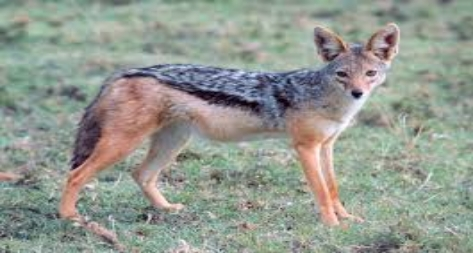
かつて森
で
Gomay
a
という名前のジャッカルが住んでいました。彼は食べ物を捜すのが面倒でした。彼はしばしば獲物をキャッチし、それを自分自身を食べる若いジャッカルを離れて追いかけました。
他のすべてのジャッカルは彼と怒っていました。彼らはすべて集まっ
て
Gomay
a
を取り除くことにしました。それらのどれも彼ほどの大きさではなかった、と個別に彼に挑戦しませんでした。「これは、コントロールを超えて取得され、
」1
匹のジャッカルは語りました。
「我々は、すべての努力をして獲物を殺す
と
Gomay
a
が来て、それを主張しています。」
「私はアイデアを持って、」別のジャッカルは語りました。
「私たちは獲物をキャッチ交代します。私たちの一つは、彼の料理を有していると、他の人が一緒に離れ
て
Gomay
a
を維持します。彼は私たちのすべてには一致していません。」
物事はその
後
Gomay
a
のために非常に困難になりました。彼は、もはや他のジャッカルから食べ物を奪うことができませんでした。彼らはすべて一緒に彼を攻撃し、彼を離れて追いかけました。彼らも、彼はそれ以上の林の一部で狩りをすることができません。
Gomay
a
は森の別の部分に遠く離れてさまよいました。ついに彼は森の最も遠い部分に来ました。今では、彼は何日も食べていませんでした。彼は非常に弱く、疲れを感じました。「私はすぐにいくつかの食べ物を見つけるために持っているか、他の私は死ぬだろう」と彼は思った。彼は周りにさまよっているように、彼は捨てられた戦いの場に来ました。
突然、大声と恐ろしい音がありました。「バン！バン！バン！」
Gomay
a
は恐怖でいっぱいとなって、早く彼ができたとして逃げたました。短い距離を実行した後
、
Gomay
a
が停止しました。彼はまだ音が聞こえました。しかし、それは近づいていませんでした。「私は勇敢なると、その恐ろしい音を引き起こしているかを調べる必要があり、」彼は彼の心は恐怖でいっぱいだった
。
Gomay
a
はゆっくりと戻って戦場へ行ってきました。決めたが、彼は勇敢であることを決めました。
彼がそこに着いたとき
、
Gomay
a
は安堵とため息をつきました。音は捨てられた戦いの場に木の横に横たわって無害な古い戦争のドラムによって作られていました。風が吹いたびに、ツリーの下の枝には、大きな音を作るドラムに対して磨くでしょう。
Gomay
a
は戦争ドラムの近くに横たわっている食品の多くを見つけることが喜んでいました。彼の胃がいっぱいだったまで彼が心から食べました。
私は恐怖の中で離れて実行し、すべてのこのおいしい食べ物を逃していた場合はどのような愚か者私があったであろう、」ジャッカルを考えました。
ジャングルではジャッカルのパックが住んでいました。彼らは、ライオンの食事の左オーバーから食べに一緒に狩りでしょう。ジャッカルの一つは、少し古いなっていました。すべての若いジャッカルは彼をいじめ、彼は食べ物を共有することはできませんでした。
「私は私の空腹を満たすために何かをしなければならない。このように、私は非常に長いために生存しないであろう、」ジャッカルは自分自身に考えました。
彼はパックを残しや食品の検索に行くことにしました。彼は多くの日のために周りにさまよったが、いずれかの食べ物を見つけることができませんでした。彼が行ったどこでも、他の動物は彼を離れて追いかけました。
最後に彼は、食品の検索で村に進出することを決めました。日暮れ後、ジャッカルは、食品の検索では、村の通りを歩きました。突然犬のパックは、ジャッカルを追いかけるようになりました。彼の弱い足が彼を運ぶことができるように彼の人生のためにおびえ、ジャッカルは早く走りました。エスケープのない方法を見つけることない、ジャッカルは彼が最初に見つかったオープンハウスに飛び込みました。
突然、彼は悪臭液のバットで自分自身を発見しました。これは、インジゴ染料のバットでした。家は村のワッシャー人に属していました。ジャッカルが液体の外に急いで登り、恐る恐るアウトじっと見たとき、外で彼を待っていた犬は、遠吠えを出すと自分の足の間に隠れて彼らの尾で逃げました。ジャッカルは驚きました。しかし、なくなって犬を見つけ、彼は慎重にジャングルに戻りました。
ジャッカルは彼の喉の渇きを癒すためにジャングルの中の水の穴に行ってきました。ジャッカルが近い経つにつれ、そこに来ていた他のすべての動物はパニック
に
A
Wの
A
Y
を走りました。ジャッカルはそれらを怖がっていたものを見るために驚いて周りを見回しました。しかし、彼は何も悪いことを見ませんでした。彼は非常にのどが渇いていたので、彼の渇きを癒すために水の穴に行ってきました。彼は飲みに曲がったように、彼は華麗な神秘色の奇妙な生き物は水から彼を見上げて見てショックを受けました。ジャッカルは最初驚いたが、すぐに彼は彼自身の反射を見ていたことに気づきました。彼は落ちていたその中に悪臭液体を思い出しました。「これらすべての犬やフォレスト内のすべてのこれらの動物は恐れていただから、なぜだ！」彼は自分自身に考えた。すぐに計画を考えた彼の狡猾な心。
彼はおびえ動物にアウトと呼ばれます。「私の恐れてはいけません。私はあなたを保護するためにブラフマーで下してきた。」動物はすべて一度に彼を信じ、彼を王となりました。
日が経つと、ジャッカルは誇り
と
lazie
r
になりました。彼はもはや食べ物を探す必要はありませんでした。彼の主題は、猫に彼に食べ物を持参し、彼のあらゆるニーズの世話をするでしょう。ジャッカルは彼の人生に非常に満足しました。
一つの満月の夜、ジャッカルが前に属していた人にジャッカルのパックは月に遠吠えを始めました。インディゴジャッカルは、長い時間のために彼の兄弟の遠吠え聞いたことがなかったです。遠吠えする衝動は、彼がコントロールするのはあまりにも強かったです。彼は頭をバック投げ
、
hisheart'sconten
t
に吠え始めました。
他の動物は、共通のジャッカルのような彼らの天国送られた王の遠吠えを聞いて驚きました。そして、すぐに彼らは彼らの間違いを実現しました。
「これは梵天によって送られたいかなる特別な動物ではありません。彼はジャッカルのように遠吠え、」熊は言った。「はい。彼は他のジャッカルに出て呼んでいます。」「彼は私たちにだまされました。」「彼は処罰されなければならず、」いくつかの他の動物は述べています。「さんは彼にレッスンを教えるみましょう来る。」動物が一緒に参加し、藍は深刻な打撃を与えたジャッカル。
カエルと牛
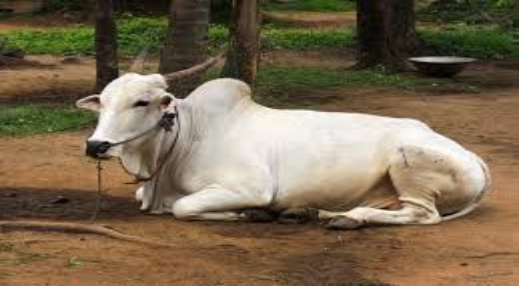
牧草地の底に流れた小さなストリームでユリパッドの上に、古いカエルが住んでいました。彼は大きなカエルだった、彼は彼の大きさを非常に誇りに思っていました。他のすべてのカエルは彼の畏敬の念を抱いたとの最大の敬意をもって彼を治療しました。
だから、他のすべての生き物をしました。日中のストリーム上でホバリング輝く青いトンボは、これまで彼の長い粘着性の舌の手の届かない所に保管するために細心の注意をしました。だから、夕方にはソフトクラウドにすることによりひらひらと少しユスリカはなかったです。流れの中であっても魚は彼を困らせないように気をつけました。カエルは彼の涙の王国は比類のない判決を下しました。
ストリームで草原を所有する農家も古い牛を持っていました。牛はファーマーのために懸命にすべての彼の人生を働いていました。彼は彼が彼のフィールドを耕す助けました。古い木造カートに結ば、彼は市場に彼の作物や学校に自分の子供たちを実施していました。しかし、今牛は古い成長していました。彼は、もはやハード、彼がに使用されるような仕事をする力がありませんでした。
ファーマーは、彼が長年にわたって行っていたすべてのハードワークのための彼の昔の牛が好きと感謝していました。彼は彼を販売したくありませんでした。代わりに、彼は牛がストリームによって草原で、平和に彼の老後を過ごすようにすることを決めました。
ある晴れた朝、牛は牧草地に移動しました。彼は彼の新しい家を調査、牧草地の周りにさまよいました。草は柔らかく、緑色であったと野の花が地面に点在しました。牛は幸せでした。彼は甘くジューシーな芝生の上で放牧や日光浴彼の日を過ごすことを計画しました。
草原の小さな生き物は、恐怖と畏敬の念牛を見つめていました。蝶が彼の方法のうち、急いで飛びました。牛がでゆっくりと歩いて勤勉アリと忙しい蜂は自分の仕事を停止しました。彼らは牛のように大きな任意の生き物を見たことがなかったです。ストリーム内ユリパッド上でさえ古いカエルはかなりこの大きかったです！牛は甘い草の上に喜
ん
munche
d
。彼はさらに小さな生き物に気付きませんでした。
カエルは草原に住むようになっていた巨大な怪物についての自分たちの中で興奮してチャタリング
ト
ンボを聞きました。トンボは、それがによってストンプとほぼ怪物での踏みつけていたアリからそれを聞いていたテントウムシからそれを聞いていたマルハナバチからそれを聞いていました。
「それはあなたが今まで見た最大の、最大の、最も巨大な生き物です！」トンボを叫びました。それはそれ
の1
つの泡立て器が私たちのすべてを吹き飛ばすには十分であるほど長いので、強力な巨大な湾曲その頭の上の角と尾を持っています！」
カエルはトンボが
言
った言葉を信じませんでした。「ハ！あなたのこの怪物は、私よりも大きくなることはできません！」彼は泣いた。「そして、角と尾
、
BA
H
！彼らは私の長い粘着性の舌よりも恐ろしいことはできません！」
どのようにすべての生き物は、彼よりも大きいだろうか？彼は、世界最大の、最も壮大なカエルませんでしたか？トンボはちょうど失礼されていました！
カエルは彼の長い粘着性の舌を突き出し、彼らは時間内にかわしていなかったトンボの少なくともダースをキャッチしているだろう。
ちょうどその牛は、ダウンストリームに散歩しました。彼はのどが渇いたと飲み物を望んでいました。
トンボは恐怖に震えと遠牛の湾曲角とロングテールの手の届かないところ上記の偉大な輝く雲にまで上昇しました。
牛は、彼の塗りつぶしと離れてストリームから歩いを飲んで昼寝のために落ち着きました。
彼のユリパッド上の古いカエルは牛を見て、すべての大騒ぎが約だったかと思いました。恐ろしい怪物は愚かな古い牛は何もなかったです！そして、どちらかではない、非常に大き
な1
！牛が離れて歩いていたとき、彼はアウトと呼ばれます。「ねえ。トンボ、これはあなたの恐ろしい怪物でした？」
トンボは、彼らの輝く翼
を
rustle
d
と答えました
。'
はいはい。カエル！あなたは彼がどのように大きな見ました？」
カエルは軽蔑笑いました
。'
大きい？あなたは大きなことを呼びますか？私がしたい場合は、なぜ、私はそのよう
に2
倍の大きすることができます！時計
！
"
そしてカエルは、深呼吸を
し
huffe
d
とパフと風船のように膨らんアップ。
'
そこ！私は今、彼ほど大きくはないのですか？」彼は少し難しさと言えば、見てトンボを尋ねました。
'
あらいやだ。カエル、まだ！」トンボを叫びました。「怪物ははるかに大きいです。草の中に眠っている彼を見てください！彼は巨大に見えます！」
'
じゃあ。私を見て
！'
カエルは語りました。彼は、深呼吸を
し
huffe
d
とパフといくつかのより多くを膨潤しました。「私は今、彼よりも大きくなければなりません！」彼は息を呑みました。
「いいえああ、カエル」。トンボを叫びました。
「怪物ははるかに大きいです！」
カエルはトンボとかなりイライラしました。彼の皮膚はタイトな感じと延伸しました。彼はあらゆる瞬間をロールオーバーと感じ、彼の頬がそのように彼の目は、ほぼシャットを圧迫していることをふくらませたように、座ってすることは困難でした。彼はやっと彼の巨大な腹の上に見ることができました。彼は今では牛と少なくとも同じ大きさでなければなりません確信していました！彼はもう一つの試みを作ることにしました。彼は大きかったトンボを示すだろう！
「私を見て、」彼は非常に困難
で
squeake
d
。
彼は、彼が管理できるように、など深呼
吸
huffe
d
とパフと膨らみました。彼が吹いたと彼が吹いたと彼が吹いたと、彼は突然まで大きくなると、ますます大きな成長しました。
ポップ！
カエルは破裂していました！
フーリッシュ・クロウ
冬は特に寒いされていました。雪が地面に厚くて重い横たわっていました。リス、アナグマとハリネズミは寒い、暗いヶ月を離れて眠りに自分にぴったりの冬の家庭に消えていました。アマツバメとツバメはずっと前に暖かい国のために残されていました。でもナメクジやカタツムリは春を待つために森林のいくつかの暗い、暖かいパッチに離れて隠れて、消えていました。森とフィールドが沈黙し、空でした。唯一の大きな黒いカラスは、彼女の夕食を探しました。
クロウは、食品の検索ですべての日飛びました。しかし、彼女は何も、いなくても小さなマウスまたは誰かの残りランチの作品を発見していませんでした。今、彼女は疲れと空腹でした。彼女は悲しそ
う
cawe
d
。
「私は夕食なしで今夜行かなければならないだろう、」彼女は彼女が何か食べるもののため
の1
つの最後の必死の検索で空を横切ってゆっくりとフラップと思いました。
彼女は空に上がってくる煙の細い柱を見たとき、遠く離れた距離で、折り返しの地点にありました。
「煙が火を意味し、火が料理を意味し、調理食品を意味します！」カラスを考えた。彼女はカーリングの煙に向けて、早く彼女ができたとして飛んだ。煙は農夫の妻は彼女のために夕食を調理した大規模農家の煙突から来ました家族。おいしい香りのシチューは、火災や焼きたてのパンのパンの上に大きな鍋でバブリングされたことは、テーブルの上にスライスにカットする準備ができました。バターのパットとチーズの塊は、上の大皿に横たわっていました窓敷居。農夫の妻はとても冷たい空気が融解からバターや発汗からチーズを続けるだろうウィンドウを開いたままにしていました。
クロウは、開いているウィンドウでチーズを見ました。クイックフラッシュのように、彼女は、窓台にまで飛んだ彼女の大きな黒いくちばしでチーズをピックアップし、オフに飛びました。農夫の妻は窓に彼女の背中に、シチューを攪拌しました。彼女はカラスを見ていません。クロウは、自分自身に非常に満足していました。「寒い冬の午後にチーズの作品のような何もありません！」彼女は思った。
彼女は背の高い木の塊に向けて飛んだと快適で、彼女の食事を楽しむために高い地上裸の枝の上に快適にとまりました。
狡猾な古いフォックスは、農家の庭の茂みの中で隠されていました。彼は食べ物を探しに一日中森とフィールドを歩き回っていました。しかし、彼は食べることは何もなく、鳥もマウスでも誰かのピクニックからでもスクラップを発見していませんでした。今、彼は疲れて空腹でした。
「私は夕食今夜なしで行く必要があります。」彼はため息をつきました。
彼は彼女のくちばしでチーズの切れ端で裸の枝にカラスのパーチを見たとき、折り返しの地点にありました。
「どのようなチーズの素敵な、臭い一枚！」フォックスは思いました。私は夕食のためのチーズのその部分を持っている必要があります。今、唯一の私はカラスから離れてそのチーズを取ることができれ
ば
..
.
」
フォックスはカラスが枝に快適に自分自身を落ち着か見ました。彼は自分自身にこっそり笑いました。ツリーの足元まで散策、フォックスはアウトと呼ばれます。
"
こんばんは。ミセスクロウ！今日はよく見て！」
カラスは驚きでフォックスを見下ろしました。彼女は彼が前にとても丁寧に話すのを聞いたことがありませんでした。
フォックスは続けました。「ミセス・クロウああ、どのように美しいあなたです！あなたの羽はとても黒いです！だから、滑らかで輝きます！本当に。私は前に、このような羽を見たことがありません！」
クロウはさらに驚きました。誰も前に彼女の美しいと呼ばれていませんでした！もちろん、彼女はいつも彼女がどのようにかなり知られていました。しかし、他のいくつかのいずれかによって賞賛することが楽しかったです。
フォックスは彼女を見上げてため息をつきました。「どのように優雅にいます。ミセスクロウ、どのようにエレガント！あなたはとても素晴らしく良くすぎと高いワシよりも飛びます！」
クロウは、背の高い彼女自身を開催しました。彼女はいつも彼女がどのように優雅で上品な知られていました。もちろん、彼女が最も素晴らしく高く飛ぶことができます！それをどのように賢いフォックスのを知っています。彼は再び彼らを賞賛できるよう彼女は羽だけ少しフラップ。どのような魅力的な生き物彼がいました！
フォックスは、深呼吸をして続けました。「あなたの爪は、エヘン、私はあなたの鉤爪を意味します。ミセスクロウ！彼らは鋼鉄よりも強いです！」
あ
あ
..
.
彼女の鉤爪！彼女はいつも彼女の鉤爪を誇りに思っていました。フォックスは彼女の爪をもう一度見てとることができるように彼女が枝にぎこちなく飛び乗りました。本当に、彼は素敵な事を言っていました！
クロウは、今では彼女がきれい、最も優雅で、すべての最強の鳥だったことはかなり確信していました。
フォックスは自分自身に密かに微笑みました。彼はカラスでうっとり見て言いました。「親愛なる夫人クロウ。私はあなたの声を聞いていません。それはあなたがそうであるように美しい、世界で甘い声でなければなりません。親愛なる夫人クロウは、あなたは私のために歌ってないだろう？」
カラスは光栄でした。他のすべての鳥は彼女がひどい声を持っていたことを彼女に伝えていました。そして、ここでフォックスは彼のために歌うために彼女を物乞いでした！もちろん、彼女はいつも彼女が持っていたもの素敵な声を知っていまし
た
...
クロウは、深呼吸をし、大声で、騒々し
い
CA
W
の彼女のくちばしを開きました！」ダウンチーズの一部を落としました！それが落ちたとカラスは何が起こったか実現する前にそれを飲み込んだとしてフォックスはそれをスナップ。
フォックスは笑い立ち去りました。「次回は、夫人クロウは、あなたが信じているものを注意してください！」彼は木々の間消えたとして、彼は叫びました。
クロウは愚かな感じ残っていました。フォックスの巧妙な言葉によって取り込まれたことを、彼女の素敵なディナーを失うこととどのように彼女は、とても無駄ので、愚かだったかもしれません！
クロウは、悲しいことに、彼女の羽をフリルと空腹の夜の準備ができました。
忠実なマングース
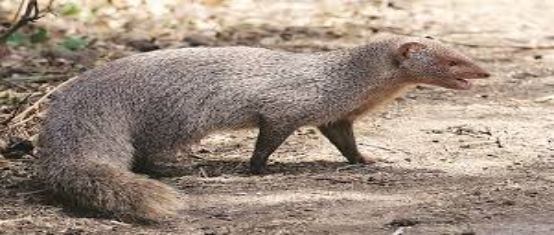
一度彼の妻と小さな村に親切なバラモンが住んでいました。彼らは少しの息子を持っていました。ある日、彼は近くの村から帰国されたとして、彼はその母親の死体の隣に泣いて赤ちゃんのマングースに出くわしました。
"
ああ！貧しい生き物、」バラモンは思った。「私はここにそれを残す場合は、必ず死ぬだろう。」彼はそれを拾って、彼と一緒に家にそれを取りました。
「ガウリは、私は家に帰る途中で、この小さな生き物を見つけました。「彼は彼の妻に言った。「私たちは彼の世話をしてみましょう非常によく私たちの息子と一緒に、私もマングースの世話をする、」妻は答えました。
マングースは、たくさんの愛で育ち、バラモンの家で世話します。彼は、クレードルにバラモンの息子の隣に眠っていた牛乳を飲んだ少年の日常を果たしました。赤ちゃんのマングースの日には、バラモンの家で喜びでいっぱいでした。少年とマングースの両方が育ったとして、彼らの友情
は2
人の兄弟間の関係に変化しました。
マングースは速く育ち、日が経つと、バラモンの妻は、彼女の心の中で疑問を得るようになりました。「結局のところ、これは野生動物です。遅かれ早かれ、それはその本当の色が表示されます「と、彼女は自分自身に考えた。彼女は別途マングースのベッドを入れて、これまで彼は彼女の息子と遊んだときに慎重に彼を見てしまいます。
バラモンは離れていたある日。ガウリは、水のポットを取得するために、川に行くことにしました。彼女は周りを見回して、彼女の息子がクレードルに眠っている音を見ました。マングースは、クレードルのふもとに床の上にも眠っていました。これは私が私が私の小さな息子を傷つけないようマングースを信頼することを願っのみいくつかの瞬間を取る必要があり、」彼女は自分自身に言ったし、それらの両方に最終的な外観の後、彼女はダウン川に急ぎました。
突然、マングースはスタートで目が覚めました。彼は非常にかすかな音を聞いていました。見上げる、マングースは、壁に穴を介してクロール大きな黒い蛇を見ました。
「蛇が私の弟に害を与えます。母と父は離れています。私は蛇がクレードルに向けてスリザリング来た「、マングースを考えて、私の弟を保護する必要があります。
勇敢な小さなマングースは、巨大な黒い蛇に急襲しました。長く、猛烈な戦いの後、少しマングースは最終的に蛇を殺すために管理しました。
ちょうどその時、彼は戻ってバラモンの妻を聞きました。嬉しそうに、彼は彼の母親を満たすために走ったし、彼は恐ろしい蛇から弟を保護していた彼の小さな動物の兆候を通じて彼女に言ってみました。
しかし、すぐにガウリはマングースの口や足に血を見たように、彼女は「この惨めな動物は私の小さな息子を殺した。」、と思った怒りのフィット感でバラモンの妻はすぐに彼を殺しマングースに水の完全な鍋を投げました。
重い心で家に入ると、彼女は彼女の小さな息子が睡眠中にまだ深い彼のクレードルに横たわって見て驚きました。階にはオフにかまその醜い頭を持つ巨大な黒蛇でした。
「ああ、私がやっていること、」バラモンの妻を叫んだ。「私は私の貴重な息子の命を救っ忠実少しマングースことを殺しました。」
野生ロバはかつて森に住んでいました。彼は何の友人を持っていたし、すべて一人で住んでいました。
ある日、通り過ぎるジャッカルはロバを見ました。彼はロバに上がったし、問題は何である」と言いましたか？なぜあなたはとても悲しい私の親愛なる仲間を求めますか？」
ロバはジャッカルになって言った、「私は友達がいないと非常に寂しい思います。」
「まあ、心配しないでください。私は「ジャッカルが彼を慰め、今日からあなたの友人になります。
その日から、ロバとジャッカルは非常に良い友達になりました。彼らはいつも一緒に見られました。
一つ月明かりに照らさ夜、ジャッカルやロバは、森の中を散歩しました。それはクールで楽しい夜でした。彼らが歩いたように、彼らは森に隣接する村の郊外に来ました。果物の木の木立があります彼らの前にいました。
"
ああ。見て！どのように素晴らしいとおいしい果物を見て、」ロバは言った。「のはそのうちのいくつかを食べてみましょう。」
「オーケー、」ジャッカルが言った。「しかし、のは非常に静かにそれをやってみましょう。」
彼らは木立に入り、静かに果物を食べ始めました。十分に食べた後、彼らは幸せとコンテンツツリーの下に横たわっていました。「それはおいしかったが、今夜を逃す何かがある、」ロバは語りました。
「それは何？」ジャッカルが尋ねた。「なぜ、もちろん音楽は、」ロバは少し驚い見て、答えました。
ジャッカルは「どこから音楽を得ようとしている？」、尋ねたロバは言った。「あなたは私が達成歌手だということを知っていますか？」
ジャッカルは驚きました。「我々は果樹園にいる、覚えておいてください。農民たちを聞く場合、我々はトラブルになります。あなたは私たちがここから行くよう歌いたい場合は、」彼はロバを助言しました。
「あなたは、私が歌うことができないしていないと思いますか？」傷ついた声でロバを尋ねました。
「あなたは私を聞くまで待ってください。」
ジャッカルはロバが彼の良いアドバイスを取ることを望んでいないことに気づきました。彼は離れて移動し、木の塊の後ろに身を隠しました。ロバは、彼の頭をバック投げ、彼の歌を開始しました。「
彼
..
.
サンザシ、姫、サンザシ、」彼は声を出し
て
braye
d
。
大
声
brayin
g
を聞い農家が棒で急いで来て、愚かなロバにすべての上に痛みを感じてロバを残した深刻な打撃を与えました。
農家が去った後、ジャッカルは彼の友人に渡りました。彼は言った。「これはあなたの歌のために獲得した賞ですか？」
「彼らは、良い音楽を鑑賞していない、」傷と恥ずかしいロバは答えました。
ジャッカルは答えました。「これは良い友人によって与えられたアドバイスに耳を傾けていないときに何が起こるかです。私はあなたが教訓を学んだと思っています。」
商人と愚かバーバー
小さな町ではマニバドラという名前の商人が住んでいました。彼と彼の妻は非常に寛大で、親切でした。町の誰もがそれを知っていたし、彼らの家を訪問し、彼らのおもてなしを楽しみました。
ある日。マニバドラは海で嵐にすべての彼の船を失いました。彼らは貴重な貨物を負荷しました。取引のために彼にお金を貸していたすべての人々はすぐに返済を要求しました。マニバドラは彼のすべての持ち物を販売し、それらを支払わなければなりませんでした。最後に彼は何も残っていました。
彼の富に加えて、すべての彼の友人たちも彼を残しました。マニバドラは非常に落胆しました。「でも、私の友人は私を見捨ててきました。彼らはちょうど私の富を気に入って、」彼は苦々しく思いました。
「私は痛みと苦しみを除き、私の妻と子供を与えることは何もありません。多分私の人生を終了することをお勧めします。私は彼らが苦しむ見て負担することはできません。」など乱れた思考で、マニバドラは眠りに行ってきました。
その夜、彼は奇妙な夢を見ました。僧侶が彼の夢に登場して、言った「あなたが棒で私の頭の上に私をタッチすると、私は多くの寿命を長持ちするのに十分な金に変更されます。」夢の中でマニバドラは、自身がスティックに変わる僧侶と僧侶に触れて見ました金貨の巨大な山。
翌朝マニバドラはドアをノック誰かの音に目が覚めました。「私の夢は本当だろうか。私は二度と金持ちになるのだろうか？」マニバドラは、自分自身に考えました。
「床屋はあなたのためにここで、」ドアから彼の妻を呼びました。
「どのように私の愚かな夢を信じるように。彼は彼の髭剃りのために座って、それが叶うことはありません、」マニバドラは自分自身に言った。ちょうどその時、ドアをノックがありました。
マニバドラは立ち上がって、ドアを開けました。驚いたことに、静かにそして有意義に彼を見ている僧侶がそこに立っていました。
マニバドラは棒を拾ってボーッと、それを彼の頭の上に僧侶に触れました。そして、そこに彼の前には、金貨の巨大な山でした。マニバドラは大喜びでした。彼は自分自身に物事を保つために彼を専門家の意見、金貨の寛大な措置を廃止床屋を送りました。
床屋は貪欲な男でした。彼はまた、非常に愚かでした。あなたは頭の上にこれらの僧侶を打ったとき「だから、彼らは金に変更します。今、私は金持ちになる方法を知っています。私はシェービングの疲れや人の髪をカットし、ルピーまた
は2
を獲得し、彼は思いました。」
彼は修道院に行って、僧侶が彼の家に入ると、床屋はスティックを取り、彼らの頭の上に彼らを倒すために始めたとすぐにごちそうのために彼の家にいくつかの僧侶を招きました。貧しい修道士たちは恐怖でした。そのうちの一つは、理髪師の家から脱出するために管理し、助けを兵士と呼ばれます。兵士たちは、理髪師を逮捕し、裁判官に連れて行きました。
「なぜ、あなたは棒で僧侶を破ったのか？」裁判官が尋ねた。「マニバドラは、彼の頭の上に僧侶を打ったとき、彼は金のヒープになって、」理髪師は答えました。
裁判官はマニバドラと呼ばれ、それが本当だった場合は彼に尋ねました。マニバドラは詳細に裁判官に一部始終を説明しました。話を聞いて、裁判官は理髪師は貪欲と不正行為に起因して行動し、愚かな床屋を処罰していたことに気づきました。
レイジードリーマー
一度、小さな村で、貧しいバラモンはそこに住んでいました。彼は非常に学んだが、一日何もしなかったました。彼は、村人たちは毎日彼に与えたの施しに住んでいました。
ある日、いつものように、バラモンは、午前中に起きて、彼の朝の儀式を行い、施しを請うために着手しました。彼はドアからドアへ行ったとして、人々は彼にいくつかのことを与えました。いくつかは
、
DA
L
を与えました。他の人が彼にご飯を与え、まだ他の人は彼に野菜を与えました。しかし、一つ寛大な女性はバラモンに小麦粉の大規模な措置を与えました。
"
ああ！何が良い運。私は、「自分自身へのバラモンを考えて、長い時間のために施しを請う必要はありません。
彼は家に行き、彼の昼食を調理しました。彼が食べた後、バラモンは、大規模な泥の鍋に小麦粉を入れて、彼のベッドの近くにそれを切りました。「さて、それはラットから安全だろう」と彼は彼が午後の昼寝のための彼のベビーベッドで寝て、自分自身に言いました。
彼は飢饉があるまで、私はこの小麦粉を保存します」、と考えるようになりました。そして、私は非常に良い価格でそれを販売します。そのことを、私はヤギのペアを購入します。非常にすぐに、私はヤギの大きな群れを持っています。彼らのミルクで、私はより多くのお金を行います。それから私は、牛と牛を購入します。非常にすぐに私はまた、牛の大群を持っています。彼らの牛乳は私にたくさんのお金を取得します。私は非常に裕福になります。私はその後、我々は少しの息子を持っているだろ
う
..
.
、自分のために巨大な宮殿を建設し、美しい女性に結婚します。私は誇りに思って父親になります。数ヶ月で私の息子は、クロールを開始します。彼はいたずらとなり、私は彼はいくつかの害に来ることを非常に心配になります
。1
は彼の世話をする妻を呼び出します。しかし、彼女は家の仕事で忙しいだろうし、私の呼び出しを無視します。私はそう怒るだろう。私は彼女にこのような教訓を教えるために彼女を蹴るだろ
う
..
.
」
バラモンは彼の足を上に投げました。彼の足は、オーバーヘッドぶら下がっ小麦粉のポットをヒットし、それがすべての汚れ、床の上に小麦粉をこぼし、響きクラッシュで降りてきました。怠惰なバラモンは彼の愚かさと虚栄心が彼に小麦粉の貴重な措置を要していたことに気づきました。怠惰と愚かさは彼にレッスンを教えました。その後、彼は高みにかかったアクティブな生活を送っていました。
一度森の中で彼の強さを非常に誇りに思っていたライオンが住んでいました。彼はちょうど楽しみのために彼の方法に来た任意の動物を殺します。フォレスト内のすべての動物は、彼らの生存を心配しました。
「ライオンはこれを続けば、私たちのどれもが森の中に残さないであろう、」クマが言いました。
「彼は本当にする必要があるよりもはるかに多くを殺す、」小さなウサギ
を
squeake
d
。
「私たちはこの大虐殺を止めるために何かを思い付くする必要があり、」猿は言った。彼らはすべてが一緒に参加し、ライオンを満たすために行ってきましたので。
「森の王は、私たちは小さな要求を行うようになった、」彼らはすべてのライオンに言いました。
「今では、何でしょう？」面白がっライオンを尋ねました。
「あなたは森の王様ですが、すぐにオーバー支配する何の動物は存在しません。だから我々は、この不当な殺害を停止するためにあなたを請うと私たちは私たちの一つは、あなたの食べ物のために毎日のあなたに来ることを約束し、」ライオンとのすべての動物を懇願しました。
だから、その日から、動物が獲物としてライオンに行くことにした人を決定するためにたくさん描きました。
ある日、多くはライオンを訪問するウサギの上に落ちました。すべての動物は彼を慰め、彼の運命を満たすために彼の方法で彼を送りました。しかし、ウサギは賢い動物でした。彼は残酷なライオンの手で死ぬことを望んでいませんでした。彼は途中で古いをよく見ました。それは非常に深いだったし、すべての動物のために危険でした。彼は計画を考えました。
小さなウサギは一日も近くで眠りにつきました。夜には、彼はライオンの洞穴に彼の方法を作りました。ライオンは、その後でひどく空腹だったし、彼は彼に向かってくる小さなウサギを見たとき、彼は激怒しました。
「あなたは少しの事は、どのようにあなたがこんなに遅く来あえて？どのように彼らは、このような小動物を送ってあえて？私はそれらすべてを殺す、」怒っているライオンは大笑い。
「それは
、O
強大なライオン私のせいではありません。私と一緒に他の三つのノウサギがありました。しかし、ここでは途中で、別のライオンたちを攻撃しました。私は脱出に成功しました。他
の3
つのノウサギがそのライオンに食べられた、「ウサギは言いました。
"
何？私のジャングルの中の別のライオン？すぐに彼に私を取る、」怒りのフィット感でライオンは言いました。
ウサギは、ウェルにライオンを取って、遠くから彼にそれを指摘しました。私たちは井戸からいくつかの水を飲むようにしようとしたとき、他のライオンがうまく内側から私たちに飛び出しました。ライオンは、ウェルに怒って急いとして覗き見。
ほかの内側に、彼は彼で、別のライオンがまぶしくあり見ることができました。どのような愚かなライオンが彼の怒りには実現しなかったことは、彼が彼の反射を見ていたということでした。彼は他のライオンに怒って大笑い。彼は答える轟音を聞きました。
それは彼自身の轟音の唯一のエコーでした。しかし、ライオンは他のライオンが彼に挑戦したことを考えました。彼は中に飛び込んだと大声スプラッシュと内部上陸しました。そして、それは邪悪なライオンの終わりでした。
かつて森 で Gomay a という名前のジャッカルが住んでいました。彼はあまりにもでした
彼の料理のために狩りに怠惰。彼はしばしば獲物をキャッチし、それを自分自身を食べる若いジャッカルを離れて追いかけました。
他のすべてのジャッカルは彼と怒っていました。彼らはすべて集まっ
て
Gomay
a
を取り除くことにしました。それらのどれも彼ほどの大きさではなかった、と個別に彼に挑戦しませんでした。「これは、コントロールを超えて取得され、
」1
匹のジャッカルは語りました。
「我々は、すべての努力をして獲物を殺す
と
Gomay
a
が来て、それを主張しています。」
「私はアイデアを持って、」別のジャッカルは語りました。
「私たちは獲物をキャッチ交代します。私たちの一つは、彼の料理を有していると、他の人が一緒に離れ
て
Gomay
a
を維持します。彼は私たちのすべてには一致していません。」
物事はその
後
Gomay
a
のために非常に困難になりました。彼は、もはや他のジャッカルから食べ物を奪うことができませんでした。彼らはすべて一緒に彼を攻撃し、彼を離れて追いかけました。彼らも、彼はそれ以上の林の一部で狩りをすることができません。
Gomay
a
は森の別の部分に遠く離れてさまよいました。ついに彼は森の最も遠い部分に来ました。今では、彼は何日も食べていませんでした。彼は非常に弱く、疲れを感じました。「私はすぐにいくつかの食べ物を見つけるために持っているか、他の私は死ぬだろう」と彼は思った。彼は周りにさまよっているように、彼は捨てられた戦いの場に来ました。
突然、大声と恐ろしい音がありました。「バン！バン！バン！」
Gomay
a
は恐怖でいっぱいとなって、早く彼ができたとして逃げたました。短い距離を実行した後
、
Gomay
a
が停止しました。彼はまだ音が聞こえました。しかし、それは近づいていませんでした。「私は勇敢なると、その恐ろしい音を引き起こしているかを調べる必要があり、」彼は彼の心は恐怖でいっぱいだった
。
Gomay
a
はゆっくりと戻って戦場へ行ってきました。決めたが、彼は勇敢であることを決めました。
彼がそこに着いたとき
、
Gomay
a
は安堵とため息をつきました。音は捨てられた戦いの場に木の横に横たわって無害な古い戦争のドラムによって作られていました。風が吹いたびに、ツリーの下の枝には、大きな音を作るドラムに対して磨くでしょう。
Gomay
a
は戦争ドラムの近くに横たわっている食品の多くを見つけることが喜んでいました。彼の胃がいっぱいだったまで彼が心から食べました。
私は恐怖の中で離れて実行し、すべてのこのおいしい食べ物を逃していた場合はどのような愚か者私があったであろう、」ジャッカルを考えました。
インディゴジャッカル
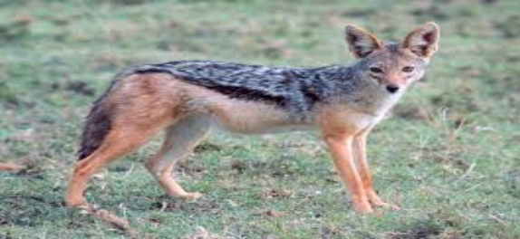
ジャングルではジャッカルのパックが住んでいました。彼らは、ライオンの食事の左オーバーから食べに一緒に狩りでしょう。ジャッカルの一つは、少し古いなっていました。すべての若いジャッカルは彼をいじめ、彼は食べ物を共有することはできませんでした。
「私は私の空腹を満たすために何かをしなければならない。このように、私は非常に長いために生存しないであろう、」ジャッカルは自分自身に考えました。
彼はパックを残しや食品の検索に行くことにしました。彼は多くの日のために周りにさまよったが、いずれかの食べ物を見つけることができませんでした。彼が行ったどこでも、他の動物は彼を離れて追いかけました。
最後に彼は、食品の検索で村に進出することを決めました。日暮れ後、ジャッカルは、食品の検索では、村の通りを歩きました。突然犬のパックは、ジャッカルを追いかけるようになりました。彼の弱い足が彼を運ぶことができるように彼の人生のためにおびえ、ジャッカルは早く走りました。エスケープのない方法を見つけることない、ジャッカルは彼が最初に見つかったオープンハウスに飛び込みました。
突然、彼は悪臭液のバットで自分自身を発見しました。これは、インジゴ染料のバットでした。家は村のワッシャー人に属していました。ジャッカルが液体の外に急いで登り、恐る恐るアウトじっと見たとき、外で彼を待っていた犬は、遠吠えを出すと自分の足の間に隠れて彼らの尾で逃げました。ジャッカルは驚きました。しかし、なくなって犬を見つけ、彼は慎重にジャングルに戻りました。
ジャッカルは彼の喉の渇きを癒すためにジャングルの中の水の穴に行ってきました。ジャッカルが近い経つにつれ、そこに来ていた他のすべての動物はパニック に A Wの A Y を走りました。ジャッカルはそれらを怖がっていたものを見るために驚いて周りを見回しました。しかし、彼は何も悪いことを見ませんでした。彼は非常にのどが渇いていたので、彼の渇きを癒すために水の穴に行ってきました。彼は飲みに曲がったように、彼は華麗な神秘色の奇妙な生き物は水から彼を見上げて見てショックを受けました。ジャッカルは最初驚いたが、すぐに彼は彼自身の反射を見ていたことに気づきました。彼は落ちていたその中に悪臭液体を思い出しました。「これらすべての犬やフォレスト内のすべてのこれらの動物は恐れていただから、なぜだ！」彼は自分自身に考えた。すぐに計画を考えた彼の狡猾な心。
彼はおびえ動物にアウトと呼ばれます。「私の恐れてはいけません。私はあなたを保護するためにブラフマーで下してきた。」動物はすべて一度に彼を信じ、彼を王となりました。
日が経つと、ジャッカルは誇り と lazie r になりました。彼はもはや食べ物を探す必要はありませんでした。彼の主題は、猫に彼に食べ物を持参し、彼のあらゆるニーズの世話をするでしょう。ジャッカルは彼の人生に非常に満足しました。
一つの満月の夜、ジャッカルが前に属していた人にジャッカルのパックは月に遠吠えを始めました。インディゴジャッカルは、長い時間のために彼の兄弟の遠吠え聞いたことがなかったです。遠吠えする衝動は、彼がコントロールするのはあまりにも強かったです。彼は頭をバック投げ 、 hisheart'sconten t に吠え始めました。
他の動物は、共通のジャッカルのような彼らの天国送られた王の遠吠えを聞いて驚きました。そして、すぐに彼らは彼らの間違いを実現しました。
「これは梵天によって送られたいかなる特別な動物ではありません。彼はジャッカルのように遠吠え、」熊は言った。「はい。彼は他のジャッカルに出て呼んでいます。」「彼は私たちにだまされました。」「彼は処罰されなければならず、」いくつかの他の動物は述べています。「さんは彼にレッスンを教えるみましょう来る。」動物が一緒に参加し、藍は深刻な打撃を与えたジャッカル。
|
|
|
これは皆を喜ばできないことを教えるための短編小説です。男と彼の息子は、一度市場へのドンキーで行っていました。彼らはその辺で一緒に歩いていたとして同国には、それらを通過したと言った：「？あなたが乗ることではなくのためのドンキーが時に何であるか、ばか」
だから、男はロバの上で少年を入れて、彼らは彼らの方法で行ってきました。しかし、すぐに彼らは、男性のグループを通過しました。一つは、言った：「その怠惰な若者を参照してください彼は、彼が乗っている間、彼の父は歩くことができます。」
だから、人は下車するために彼の少年を注文し、自分自身に乗りました。彼らは二人の女性を渡されたときしかし、彼らは遠くに行っていませんでした。一つは、他に言った：「彼のかわいそうな息子に沿って重い足取り聞かせするために、その怠
惰
Iou
t
の恥を知れ。」
まあ男は何をすべきかを知りませんでした。しかし、最後に、彼はロバの上で彼の前に彼の少年を取り上げました。この時点で、彼らは町に来ていたし、通行人は彼らに冷やかすとポイントし始めました。男は停止し、彼らがで冷罵たものを尋ねました。男性は言いました：
「あなたはあなたのことが悪いドンキーをオーバーロードするために自分自身を恥じていないです
-
あなたとあなたの図体の大きい息子さん？」
男と少年が降りて、何をすべきかを考えるようにしようとしました。最後彼らは、ポールを切ることにドンキーの足を縛り、彼らの肩にポールとドンキーを上げまで、彼らは思ったし、彼らは考えました。彼らは市場の橋に来るまでドンキーは、緩い足
の1
つを得る、追い出さとポールの彼の最後をドロップする少年を起こしたときにそれらに会ったすべての人の笑いの中に沿って行ってきました。ドンキーは、橋の上に落ち、彼のフォアの足が一緒に縛られる闘争では、彼は溺れました。
「をお教えします。すなわち、」彼らを追っていた老人は言いました：
誰が鐘猫？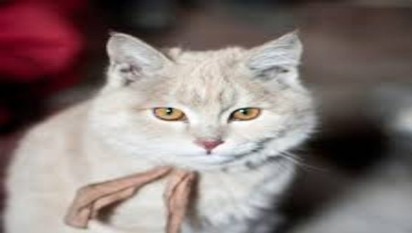
ラットとその大家族はパン屋に住んでいました。彼らはパン屋でパンやケーキを掻き取りました。
|
|
|
|
2
頭のヤギがありました。
川の上に非常に狭い橋がありました。
ある日、ヤギがこの橋を渡りました。
ただ、橋の真ん中で彼は別のヤギに会いました。
合格するそれらの余地はありませんでした。
「戻る」、他
に1
頭のヤギが「私達の両方のための余地がない」と述べました。
「なぜ私は戻って行くべき？」他のヤギが言いました。「より良いあなたが戻って行かなければなりません。」
『私はあなたよりも強いですので。』、最初のヤギが言った、「あなたは戻って行かなければなりません」
「あなたは私よりも強いではありません」、第二ヤギが言いました。
「我々はそれについて表示されます」、最初のヤギが言った、彼は戦うために彼の角を置きます。
"
やめる
！"
二ヤギが言いました。
私たちが戦う場合は」、私たちは川に落ちるものの両方と溺死され、代わりに私は計画を持っています。私は横になるものとあなたは私の上を歩くことがあります。」
そして、賢
明1
は、橋の上に敷設し、他のヤギは非常に彼の上を歩きました。
そこで、彼らは快適に橋を渡り、彼らのやり方に行ってきました。
川の土手に大きなベリーの木がありました。このツリー
に
Rhes
a
と呼ばれるサルが住んでいました。彼は賢いと良い心を持った猿でした。彼は自分の喉の渇きを癒すために川に来たすべての動物や鳥にベリーを提供しました。川では
、
Maga
r
という名前のワニが住んでいました。彼は川の下部にある洞窟の中で妻と一緒に住んでいました。
ある
日
Maga
r
ワニは獲物をキャッチするために、川の土手に来ました。それは、暑くて晴れた日だった
と
Maga
r
は、一日の任意のものをキャッチしていませんでした。疲れていると熱い、彼はいくつかの残りのベリーの木の陰に身をドラッグ。彼は彼に呼び出す誰かを聞いたとき、彼はほとんど目を閉じていませんでした。「こんにちは友人。私はここにアップしています。」
Maga
r
は猿が彼にダウン笑
顔
Rhes
a
を見つけるために見上げました。サルは、ジューシーなベリーの一握りを摘み取ら
と
Maga
r
にそれらを投げました。
「これらを食べます。彼らはあなたの渇きを癒すでしょう。」
「ありがとう、
」
Maga
r
言っておいしいベリーを食べました。
その時から、日常
、
Maga
r
は、川の銀行に来て
、
Rhes
a
によってドロップされたの果実を食べてしまいます。どちらも良い友達になりました。
ある
日
Maga
r
は、彼の妻に家いくつかの果実を取りました。彼女は、彼らがおいしいました。「うー
ん
..
.
ベリーはとてもおいしいしている場合、どのようにおいしい猿の心は、それがこれらの果実を食べただろうが、」彼女は言った。「私は、この猿の心を食べたいです。」
「どのように私はそれを行うことができますか？
」
Maga
r
は答えました。
"
彼は私の友人である。どうやって？彼を殺すことはできない」しかし、彼の妻は答えのために何を受け入れないだろう。「あなたは私に彼の心を持っていない場合、私は死に自分自身を餓死されます、 『』彼女は叫びました。
だから
、
Maga
rは
Rhes
a
に猿を満たすために行ってきました。「私の妻は、あなたは非常に彼女を送ったベリーが好きでした。彼女はあなたを満たすために望んでいます。彼女は夕食のために家を招待して、
「
Maga
rは
Rhes
a
に言いました。
「私はきっと来るだろう
」
Rhes
a
は、言った「私は泳ぐことができないとあなたは川に住んでいます。」
「心配しないで、
」
Maga
r
は、「私は私の背中にあなたを運ぶでしょう。」と述べました
Rhes
a
は容易
に
Maga
r
の背中へと跳ね上がりました
。
Maga
r
は銀行から離れて泳ぐようになりました。川の真ん中に達すると、ワニは水の下にダイビングを始めました。
「おい！あなたは何をしているの？
」
Rhes
a
はパニックに。「私は泳ぐことができないことを言いました。」
「私の友人申し訳ありませんが、
」
Maga
r
は答えた。「私の妻はあなたの心を食べたい。だから私はあなたを殺すために持っている、
」
Maga
r
は語りました。
Rhes
a
は、彼が重大な危険にあったことに気づきました。「それはあなたが望む私の心ですか？」と彼は平静な声で尋ねた。「なぜあなたはそうする前に言わなかった？私は喜んであなたにそれを与えているだろう、私は通常時に自宅に戻って私の心を残すため。我々は戻って行く必要があります私が出て行く
。
"
愚かなワニはすぐに振り向くと、バック銀行の方に泳ぎました。
Rhes
a
はす
ぐ
Maga
r
の背中から飛び降りやベリーツリーをバウンス。「あなたは馬
鹿
Maga
r
です。私は私の心を置き去りかどうかはどのように生きているのだろうか？あなたは浮気の友人でした。私たちの友情は終わった、
」
Rhes
a
は語りました。
小さな村では、二人の友
人
Papabuddh
iと
Dharmabuddh
i
がそこに住んでいました。彼らの友情は特別でした。自分のキャラクターは反対だったまだ彼らは親しい友人でした
。
Dharmabuddh
i
は非常に正直な男であっ
た
Papabuddh
i
を中心に非常に不誠実でした。
ある日
、
Papabuddh
i
は
、
Dharmabuddh
i
に言った、「私たちは一緒にビジネスを開始していないのはなぜ？
」
Dharmabuddh
i
は、合意されたので
、2
を設定し、その業務を遂行するために近くの都市に一緒にオフに設定します。
収益性の高いビジネスを実行しているのは数ヶ月後、二人の友人は、彼らが十分なお金を作っていたことを決めました。彼らはビジネスを巻き取ると、自分の村に戻って一緒に始めました。帰り道、彼らは森を通過しなければなりませんでした。彼らは休息を取るために停止したその夜
、
Papabuddh
i
は自分自身のためにすべてのお金を維持することを決めました。彼は、全体の夜の計画を過ごし、夜明けに彼の心の中で準備ができて悪の計画を持っていました。
彼らは彼らの旅を再開しようとしたとき
、
Papabuddh
iは
Dharmabuddh
i
になったと言いました。「あなたは知っている、私は考えています。私たちは、たくさんのお金を作っています。多分戻って村にすべてのお金を取ることは賢明ではありません。私たちはここにすべてのお金を埋めてみましょう。私たちはお金が必要なときに一緒に戻ってきて、私たちが必要なだけを取り出すことができます。」
「それは優れたアイデアである、
」
Dharmabuddh
i
が合意された。彼らは巨大なガジュマルの木のふもとにお金を埋め、村で彼らの家へ行ってきました。その夜
、
Papabuddh
i
は森に潜入し、下からすべてのお金を掘っガジュマルの木と再び穴をクローズアップ。
翌朝、彼
は
Dharmabuddh
i
の家に行って、私は緊急にいくつかのお金が必要」と述べました。私たちが行くと戻って私たちのお金の一部を持参しましょう。」
彼らは両方のガジュマルの木に行って、掘り始めました。お金を見つけることではない
、
Papabudh
i
はお金を盗ん
だ
Dharmabuddh
i
を非難しました。どちらも正義を追求するために、村の裁判官に行ってきました。裁判官は彼らの無実を証明するためにそれらの両方を尋ねました
。
Papabuddh
i
は木の神が彼の証人だったと宣言しました。裁判官は翌日木の神に行くことにしました。
その夜
、
Papabuddh
i
は父の助けを求めました。次の日、彼らはすべてのガジュマルの木に行ってきました。裁判官はガジュマルの木になって、木に話を聞いた「犯人であるこのツリー
のO
の神、？」
みんなの驚きに、木の内側からの声
が
Dharmabuddh
i
が犯人である」と述べました。彼はすべてのお金を持っています。」
裁判官や村の長老たちは、ケースを議論忙しかったものの
、
Dharmabuddh
i
は、いくつかの乾燥した葉や小枝を収集し、ガジュマルの木の巨大なトランクに中空の近くにそれらを配置し、それらに火をつけました。煙が木に中空に入ると、外咳、姿を走りました。それ
は
Papabuddh
i
の父親でした。
Papabuddh
i
はひどく彼の邪悪のために罰せられました。
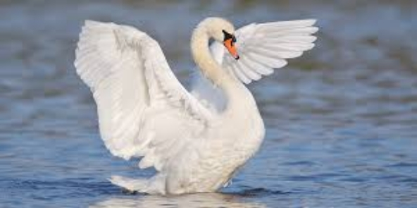
小さな村の郊外にある湖がありました。二つの白鳥と良い友達だった亀は湖に住んでいました。彼らはお互いにプレーし、物語を伝える時間を渡すでしょう。
一年間、そこには雨はなかったと湖が干上がっ始めました。
「湖はほとんど乾燥しています。私たちが生きるためにいくつかの他の場所を見つける必要があり、」白鳥の亀は言った。「我々は、飛び回る、適切な場所を探します、」白鳥は語りました。どちらの白鳥は住みやすい場所の検索に異なる方向に飛びました。少し離れ、白鳥の一つは、大きな湖を発見しました。これは、多量の水を持っていたし、それには多くの魚がありました。彼は他の人に伝えるために戻って飛びました。
それら
の3
つが検索に非常に興奮していました
。"
ワオ！今、私たちはすべての問題を持っていないだろう、」亀は言いました。
「一つだけ問題があり、
」1
羽の白鳥は答えた。「私たち二人は時間がないのが飛ぶことができます。しかし、あなたは非常にゆっくりとクロールします。そして、それは離れていくつかの距離である。あなたがそこに到達することはありません。」
亀はいくつかの時間のためにと思いました。突然、彼の顔が点灯します。「私はアイデアを持っている、」彼は言った。「あなたは私のスティックを持って来る。私は私の口の中に棒の中心を保持します。あなたの両方がいずれかの側にスティックを保持することができます。あなたが私たちにあなたと私を飛ぶことができますこの方法新しい家。」
「それは非常に良いアイデアですが、あなたが何らかの理由であなたの口を開けていないことを確認する必要があります。そうした場合、あなたはあなたの死に分類されます、」白鳥のいずれかを警告しました。
カメは、合意されました。
彼らは飛ぶ準備ができましたと白鳥を思い出し「私たちは、あなたが言ったことを覚えておいてください」。やがて彼らは空高く飛んでいた。彼らは湖に到達するために、村の上空を飛行していた。彼らは村の上に飛んだとして、人々がなくなりました通りには、この驚くべき光景を見て。
「どのような巧妙な鳥。彼らはスティックにカメを運んでいる！」一人の男が叫んだ。一人一人がこのような素晴らしい光景を見て興奮しました。
「それは私のアイデアでした。私は巧妙な一人です。私はそれらを知らせる必要があり、」亀は、彼は説明して彼の口を開いた。思ったが、愚かな亀は何も言うことができる前に、彼がドサッと落ちて死亡しました。
白鳥は、彼らの死んだ友人を見下ろし、彼の愚かさに激しく頭を横に振りました。「彼は彼の口を閉じ保たれていた場合、彼は私達と生きていると幸せになる、」彼らはその後、上から自分の家のようになり、大きな湖で上陸したように、他
に1
白鳥は述べています。
太陽と風
太陽と風がけんかを持つことが起こったら。それらの両方が強くなると主張しました。ついに彼らは強さの裁判を持っていることに合意しました。
やがて彼は彼のマントを脱いで袋にそれを置きます。
|
一度古い時代に弱い成長していた蛇は、多くのカエルは彼らの王、女王と王子と一緒に住んでいた池に出くわしました。蛇は何日も食べていませんでした。彼はカエルの一部をキャッチしようとしたが、それらのいずれかをキャッチするにはあまりにも弱かったです。「私は、いくつかの解決策を考える必要がありますか、私はすぐに死んでしまう、」蛇は思いました。
ちょうどその時、彼はカエルの王子と彼の友人を見ました。彼らはゲーム内で忙しかったと蛇に気付きませんでした。彼らは非常に近くに来たときは、そのうちの一つは、ヘビを見て、「ああ、蛇は、」彼はそれらのすべてが自分たちの生活のために走った。恐怖の中で叫んだ。しかし、蛇が動かなかったとき、カエルの王子はに上がった、飛び上がっそれは。蛇はまだ動かなかった。「彼が死んでいるなら、私は見てみましょう？」カエルの王子を言ったと蛇の頭をノックし、すぐに離れて跳びました。
ヘビはゆっくりと目を開けて、心配しないで」と述べました。私はあなたが何で怒るません。」
カエルはとても驚きました。。蛇を説明し、「私はかつて、セージの息子ビット」「セージが怒ったと私は私の人生の残りのための私の背中にカエルを運ぶだろうと私を呪いました。」
これを聞いて、カエルの王子は喜びで飛び上がっ。カエルの王子は、蛇の上にジャンプして、命じので、彼は言った。「それから私は、あなたの背中に乗るだろう」「私の両親に私を取ります。」
王と女王が光景に驚きました。「父、見て、私はヘビに乗っています、」王子を叫んだ。「私たちはまた、ヘビに乗ってみよう、」女王は、カエルの王を促しました。だから、彼らはすべてのヘビの上に座っていました。
「あなたは非常にゆっくりと移動している、」王子を訴えた。「私は何ができるか、」悲しいことに蛇に答えました。「私は、数日間食べていません。」
「なぜあなたは食べていませんか？王室のマウントは速く、強くなければならない、」王は言いました。
「私はあなたの許可のみで食べることができる、」蛇に答え。
「あなたの被験者は、私の食べ物です。」
「どのように私はあなたが私たちを食べることを許可することができますか？」王は尋ねました。
「未王室のカエル、」蛇を説明した。「私は私の科目を食べることを許可することはできません、」カエルの王は言いました。
王子は怒っていたと叫びました。「父は、彼を許可してください。私は彼を失いたくはありません。」
でも女王は、最大話しました。「ヘビを許可してください。彼はとにかくどのように多くのカエルを食べることができますか？我々は、多くの被験者があります。」
最後に王は許可を付与する必要がありました。ヘビは毎日多くのカエルを食べ始めました。すぐに彼は非常に強く、健康的でした。今、彼は非常に迅速に移動しました。王子は非常に高速移動ヘビに乗ることを喜んでいました。
ある日、蛇は蛙王に行ってきました。「私は空
腹O
王です。池に残された多くのカエルはありません。だから今、私は猫君のすべてに行きます。」
そして邪悪なヘビは、すべて
の3
匹の高貴なカエルに急襲し、それらを食べました。
|
|
|
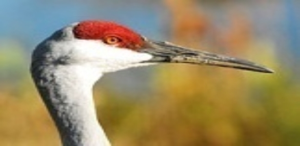
ある日、孔雀は、クレーンに会って、あなたのためにとても残念」と述べました。あなたはとても退屈な羽を持っています。私の羽の細かな色を見てください。」
「まあ！」クレーンは、答えた「あなたの外観は、鉱山そして明るいです。しかし、私は空高くまで飛ぶことができる一方。あなたがすることができるすべては、地面におよそストラットことです。」
フクロウと白鳥
かつて二人の友人は、白
鳥
Kanakaksh
a
フクロウ
と
Sumitr
a
がありました
。
Sumitr
a
は白鳥の王でした。しか
し
Kanakaksh
a
は普通のフクロウでした。彼
は
Sumitr
a
は彼が貧しいフクロウだったことを知らせることを恐れていました。そこで彼は、彼はまた王だったとも被写体を持っていたこ
と
Sumitr
a
に語りました。毎日フクロウは白鳥が住んでいた池に飛んでいくのです。
ある日いつものように
、
Kanakaksh
a
は彼の友人を満たすために池に飛びました。「おはよ
う
Sumitr
a
は、今日あなたをどのように？」と彼は尋ねました。
「私の友人おはようございます、私は元気です。ただ、王の通常の仕事に追いつい
た-
私の科目間の紛争を解決し、
」
Sumitr
a
を答えました。
ちょうどその時
、
Sumitr
a
の課題の一つは、彼に上がってきた彼の耳に何かをささやきました。
「ああ！
」
Sumitr
a
を叫んだ。
「
Kanakaksh
a
は、私の瞬間を与えてください。私は私の科目
の2
の間に別の紛争を解決しなければなりません。」
「非常によ
く
Sumitr
a
は、」フクロウを答えた。「私は右ここで待機します。
」
Sumitr
a
は彼の主題を見つけることが去った後
、
Kanakaksh
aは
Sumitr
a
が、私は普通のフクロウだということを知った場合、彼は私の友人であることを停止します」、自分自身に考えました。私は彼を感動させる必要があります。」
Kanakaksh
a
は、食品の検索で森の中を飛んでいたとして、彼は兵士とその司令官のキャンプを見ました。彼は急にアイデアを得ました。彼が戻って池に飛んだ
と
Sumitr
a
と呼ばれます。「私はあなたが私の王国を訪問したい、」フクロウを招待。
「ある日、私はきっとあなたの王
国
Kanakaksh
a
を訪問し、
」
Sumitr
a
白鳥は答えました。
「未いつか、
」
Kanakaksh
a
を促した。「あなたは今日。私は毎日のあなたに会いに来てくるはずです。
」
Sumitr
a
は、合意されたとフクロウは、兵士たちがキャンプしていた場所に白鳥を取りました。
「これは私の王国であり、これらは私の課題である、
」
Kanakaksh
aは
Sumitr
aが
Kanakaksh
a
は何の王だったことを知っていました。誇らし
げ
Sumitr
a
に言った。しかし、彼は彼の貧しい愚かな友人の気持ちを傷つけたくありませんでした。
「うわー！
」
Sumitr
a
が叫びました。
「あなたの兵士が移動する準備をしていますか？」
「いいえ！
？
HO
O「-
どのように彼らは私の許可なしにホー」フクロウは、声を出して野次キャンプの上に飛んだ」でした！司令官は、フクロウを聞いて、フクロウが野次れる」と述べました。それは悪い前兆です。私たちは行進を延期する必要があります。」
翌
日
Kanakaksh
aと
Sumitr
a
は同じ場所に来ました。軍が移動する準備ができましたのと同じように
。
Kanakaksh
a
は再
び
hoote
d
。軍は再び停止しました。三日目に再び
、
Kanakaksh
a
は司令官が彼の馬をマウントと同じよう
に
hoote
d
。
「ああ、この前兆メーカー！誰かが彼の世話をするのだろうか？」怒っ司令官を叫びました。
「私の貧しい友人が行き過ぎているこの時間は、
」
Sumitr
a
自分自身への白鳥と思いました。
兵士が進み出と枝にとまったフクロウの矢を撃ちました。しか
し
Kanakaksh
a
は、矢印を発見し、迅速に飛び去りました。
次
Kanakaksh
a
になってい
た
Sumitr
a
は矢印が来て見ていません。矢印
は
Sumitr
a
をヒットし、彼は死にました。
「私の愚かさは、私の良き友人の死を引き起こしたああ、
」
Kanakaksh
a
はひどく自分自身に考えました。
マーチャントと貸金業者
小さな町では、商人が住んでいました。彼は小企業を走りました。残念ながら、彼はビジネスで彼のすべてのお金を失いました。「私はこのように滞在することはできません。やらなきゃならないことがある。私は次の町に移動し、別の事業に投資する、」彼は彼自身に考えました。
そこで彼は、彼の出発のための装置を作りました。彼は彼が持っていたすべてを取って、残すために準備しました。彼は彼と一緒に取ることができなかった鉄計量バランスがありました。そこで彼は、彼の友人のお金の貸し手にそれを取りました。「友人は、私は次の町にビジネス上のつもりです。私が戻るまで、あなたは私のために、この鉄バランスを維持してくださいますか？」商人を要求しました。
「確かに。何故なの？あなたが前よりも繁栄して返すことがあり、」お金の貸し手を望みました。
商人は、次の町で、しばらくはお金の良い量を獲得した後に非常によくやりました。彼は戻って彼の故郷の町に行くことにしました。彼は家に金持ちを返しました。
彼は友人のお金の貸し手に行ってきました。「友人こんにちは、私は戻っています。あなたは私の鉄の計量バランスを返却してくださいことはできますか？私はそれがここに私のビジネスを再開する必要があります。」それは良い計量バランスだったとお金の貸し手は、利己的な男でした。
そこで彼は、私は私の友人は非常に残念です」と述べました。私は、私の店の部屋であなたの鉄バランスを保ったが、ラットはそれを食べました。」
商人は、彼の友人のお金の貸し手が嘘をついたことを知っていました。彼は彼を信じることをふりをして、私の友人は、私は川で入浴をしたい」、尋ねました。あなたは私と一緒にあなたの小さな息子を送るのだろうか？私は彼が私の服と私のお金袋に目を維持したいです。」
貸金業者は、容易に合意し、商人と一緒に彼の小さな息子を送りました。商人は、小さな男の子を取り、町の郊外に代わって彼をロックし、お金の貸し手に戻って行きました。
彼は、「私はあなたの息子を川に歩いていた間、私は、私の友人は非常に申し訳ありません、ワシがダウン急襲し、彼を離れて実施さ。」と述べました
「あなたが嘘をついている、」貸金業者は怒って叫んだ。「私の息子を返したり、私が裁判官に行くことができます。」
「さあ、私たちは行かせ、」商人は言いました。
ワシについて商人の話を聞いて、裁判官は「あなたは私をばかにしようとしている、と述べましたか？どのようにワシは男の子と離れて飛ぶことができますか？」
「ラットがバランスを計量鉄を食べることができるなら、なぜワシは男の子と離れて飛ぶことができないのですか？」商人を尋ねました。
「自分自身を説明し、」混乱した裁判官を命じた。全体的な話を聞いた後、裁判官は笑って助けることができなかった。彼は不誠実な貸金業者になって、彼が戻って同じコインであなたを支払った、」言った。彼に自分の体重のバランスを返します。彼はあなたにあなたの息子を返します。」
ライオンと木こり
一度ライオン、森の王がそこに住んでいました。彼はいつもジャッカルおよびカラスを伴っていました。彼らは彼のすべての場所続き、彼の料理の遺跡に住んでいました。
森に近い村では木こりがそこに住んでいました。毎日、彼は木を切るために斧で森に行くだろう。
ある日、木こりが木をチョッピング忙しかったとして、彼は彼の後ろの音を聞きました。周りの目を向けると、彼はライオンが急襲する準備ができて、まっすぐに彼を見ていました。木こりは賢い男でした。彼はすぐにご挨
拶
..
.
この森の王」と述べました。お会いできて光栄です
。
"
ライオンは驚きました。私を満たすために「喜び？あなたは私の恐れていませんか？」
「私はあなたにたくさ
ん
..
.
ライオンを尊重します。私はあなたを満たすために期待していました。あなたは私の妻は、優れた料理人で、参照してください。私はあなたが彼女
の
DA
L
と野菜を味わいたかったです。」
「ダル？野菜？私は肉だけを食べることを知らないのですか？」驚きでライオンを尋ねました。
「あなたは私の妻の料理を味わうならば、あなたは肉を食べるのをやめるだろう、」木こり誇らしげに言いました。
ライオンはとても空腹だったと彼は木こりの食糧を受け入れました。
「ジャッカルおよびカラスは私と一緒に今日はないことを良い、」ライオンは思った。「彼らは私を笑うでしょう。」
ライオンは、食品は確かに非常に美味しかったことに驚きました。「私はこのような良い食べ物を食べたことがない」と彼は言いました。
「あなたは私の食品毎日
、O
王を共有するために歓迎されています。しかし、誰も私たちの友情について知っているべきではありません。あなたは一人で来なければなりません。」
ライオンは約束しました。毎日、ライオンは木こりによってもたらされた昼食を食べてしまうと、その珍しい友情は日ごとに強く日に成長しました。
カラスとジャッカルはライオンが狩猟を停止していた理由を知っていることを切望しました。「私たちはライオンはもう狩りしない場合は餓死しようとしている、」ジャッカル
が
whine
d
。
「あなたは正しいです、」カラスは言った。「私たちはライオンに何が起こったのかを見つけるためにしてみましょう。」次の日、彼らは安全な距離からライオンに続き、木こりが彼のためにもたらした昼食を食べて彼を見ました。
「ライオンはもう狩りない理由だから、これは、」カラスのジャッカルを言った。「私たちは私たちに彼の料理を共有するためにライオンを取得する必要があります。その後、我々は木こりと彼の友情を破ることができるとすることができ、ライオンが開始されます再び彼の獲物を狩り。」
ライオンは、その日の夕方戻って彼の洞穴に来たときは、カラスやジャッカルは彼を待っていました。「私の主よ、なぜあなたは私たちを忘れてしまいましたか？私たちはすべて我々がするために使用のように狩りに行かせてください、」カラスとジャッカルを懇願。
「いいえ！私は私が私の古いやり方から私を変えた友人に会って以来、肉を食べてあきらめた、」ライオンは言いました。
「我々はまた、あなたの友人に会いたいと思い、」カラスは言いました。
翌日、木材カッターは、彼の友人のライオンを待っていつものようでした。突然、彼は声を聞きました。木こりは非常に慎重かつ巧妙な男でした。彼はすぐに背の高い木に登りました。距離では、彼はライオンが近づいて見ることができました。彼とカラスとジャッカルました。「周りの
人2
で、ライオンとの私の友情は非常に長くは続かないだろう」と彼は自分自身に言いました。
ライオンはダウン是非、ご参加ください」、木に来て、木こりにアウトと呼ばれます。それはあなたの友人私です。」
「それはそうかもしれ、」木こりアウトと呼ばれる。「しかし、あなたは私にあなたの約束を破った。これら二つは、あなたが約束を破ることができますならば、彼らはあなたも私を殺すことができます。あなたは私たちの友情を忘れることができます。」
孔雀は、ナイチンゲールの嫉妬したと同様に、後者を歌いたかったです。それが歌うしようとすると、誰もがそれを笑います。失望、孔雀は、ローマの女神ジュノーに近づき、ナイチンゲールのように美しい声を要求します。ジュノは拒否し、それが美しさを授けているように、ナイチンゲールはとても美しい声、ワシ、強度を与えられ、孔雀を伝えます。ジュノは言う：「誰もが独自の方法でユニークです。」
教訓：あなたの強みに満足して。一つは、すべてに秀でることができません。